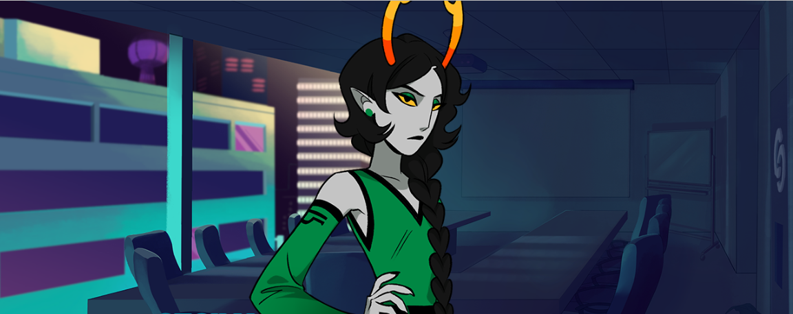
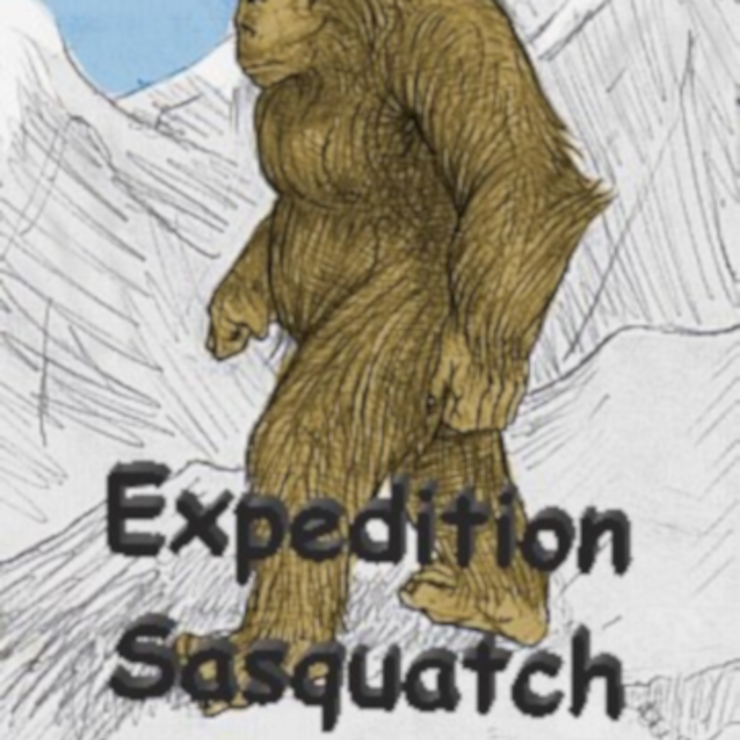
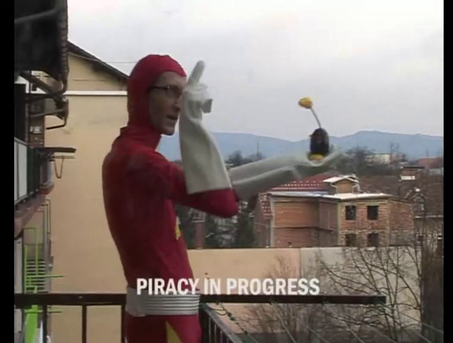

I’m finally here. I mostly post on my blog on various topics (programming, Free Culture, Star Trek, social justice issues, media, and whatever else I feel like talking about), and have been investigating alternatives to a (ahem) certain social media website currently owned by a cartoon supervillain. I’ll try to at least post here to announce blog posts, and will interact depending on how well I integrate into the broader community.
Cohost effectively closed on 2024 October 1. This page quickly
reconstructs the content posted by
John Colagioia, based on
the export provided by Cohost.
Dante Wasn’t Wrong about Neutrality…
Excellent analysis, and it goes with something that I’ve been screaming about forever, which is that you can’t make anything “apolitical.” Every work of art, every craft project, every industrial product, and everything in between relies on a set of assumptions and intentions, which have a history and which have a center of gravity in politics. You can choose to interrogate them as you work and present what you want, or you can deliberately remain ignorant of them and let someone who you’ve never met choose your politics for you. And one of those seems like an extremely odd choice…
On my blog: Real Life in Star Trek, Loud As A Whisper, wherein the show tries to finally say something sincere, but also can’t help making everybody uncomfortable…
Tags
On My Blog
Free Culture Book Club — Quantum Flux
If you ever wanted a role-playing adventure in an off-brand Aliens franchise but relying on the players to bring the tension, this is it…
Tags
On My Blog
Includes me watching people deal with bad companies, the year’s releases, new direction for the blog, and more.
Tags
Now One of My Favorite Messages…
you don’t have any drafts right now. have you tried writing worse posts?
Thanks, Cohost @staff, for that laugh. I love a good error message that manages to both be funny and not accuse the user of anything.
Tags
New Blog Post
Real Life in Star Trek, The Schizoid Man
This episode is highly illustrative of the “real life” from my title, where everybody is charmed by the guy who says racist and sexist things, and also lean hard into their microaggressions to ignore a colleague’s pleas for help and ultimately his danger. The walk-on character, though, speaks up about some of it, telling us that the characters hold these views, not necessarily the writers.
Tags
On My Blog
Bonus: This is the week where I hand over Twitter to cross-posting bots, so I never have to talk about “tweets of the week” again…
Tags
On My Blog
üçæ Happy Calendar-Changing Day, 2023 üéÜ
Every year, I (within a few days) start the year looking ahead to upcoming media (including public domain releases), science and technology, law and politics, and my personal plans. What do you see looming ahead…?
Tags
On My Blog
Developer Diary, National Science Fiction Day
The final (one hopes) update on social media changes, struggling to fix a MySQL database, a new project to convert Jekyll posts to HTML files without the blog, the blog itself, and some library updates.
Tags
New Blog Post
Real Life in Star Trek, Unnatural Selection
For this episode, I talk about employee reviews, poor management, genetic engineering including CRISPR, racism, and…hairbrush storage? It’s a weird one, for sure…
Tags
On My Blog
Toots üêò from 01/02 to 01/06
For the interested, I generally pre-schedule some “mainstream” social media activity, a link to an article in the morning (New York time), usually politics or science, and a quote around lunchtime. These posts collect that activity and anything else that I decided to write. (They go there, instead of here, to avoid boring everybody here…)
Tags
On My Blog
Free Culture Book Club — Life Blood, chapters 4 ‚Äì 5
We still haven’t gotten to the story, but we do get some seriously regressive thoughts, and I can’t help wonder what we should take as satire and what I should feel offended at reading…
Tags
On My Blog
Developer Diary, Hōonkō: Progress on assorted projects
Including…
- Ham Newsletter, my newsletter-generator;
- my Morning Dashboard; and
- a new project Boring CSS, because I’m tired of CSS frameworks for quick projects…
Have a great week, and I hope that those who celebrate/observe Hōonkō enjoy the gathering.
Tags
On My Blog
Real Life in Star Trek, A Matter of Honor
We dig into some pervasive racism and sexism, and ask why this crew has so much time to play video games…
Tags
On My Blog
Toots üêò from 01/09 to 01/13
Every Friday, saving Cohost followers the trouble of finding me on other platforms…
Tags
On My Blog
Free Culture Book Club — Life Blood, chapters 6 ‚Äì 9
We recover some lost momentum, but there’s a weird aspect of this book that desperately wants to be a romantic comedy, instead…
Tags
On My Blog
Developer Diary, Martin Luther King Jr. Day: Progress on assorted projects
- Boring CSS kind of works and has a demonstration page
- GitHub profile issues
- Blog changes
Tags
New Blog Post
Real Life in Star Trek, The Measure of a Man: The outside world in Star Trek
We need to talk about…
- Picard’s shady past on the Stargazer,
- The Federation’s poor record on slavery,
- A glimmer of civil rights in the Federation,
- Bizarrely poor interpersonal skills, and
- General racism.
For an episode about social progress, it gets surprisingly bleak…
Tags
On My Blog
Free Culture Book Club — Life Blood, chapters 10 ‚Äì 13: Discussing a Thomas Hoover novel
We start to see the plot come together, and some good characterization, though we still have that ugly racist undercurrent.
On My Blog
Developer Diary, World Freedom Day: Progress on assorted projects
- Boring CSS got some “fun” design languages.
- Miniboost no longer panics when multiple monitors exist.
- The blog itself has some minor configuration changes.
- I launch the Tool Trunk project, to improve my Mastodon workflow.
And I experiment with an AI-generated header image, since World Freedom Day actually has some unfortunate connotations…
Tags
On My Blog
Real Life in Star Trek, The Dauphin: The outside world in Star Trek
The awkward and creepy teenage rom-com acts as a vehicle for characters slacking off and providing a hostile work environment, tons of sexism, plenty of racism, ugly trans panic, and privilege…
Tags
On My Blog
Free Culture Book Club — Life Blood, chapters 14 ‚Äì 16: Discussing a Thomas Hoover novel
The book regains some momentum…and then trips over Steve, and an almost-obsessive hatred of Guatemala, for some reason.
Tags
On My Blog
Developer Diary, Fred Korematsu Day: Progress on assorted projects
This week was all about the Mastodon Tool Trunk, so that I can improve my automation, there.
And, of course, look up Korematsu.
Tags
On My Blog
Real Life in Star Trek, Contagion: The outside world in Star Trek
We have more need to look at Starfleet’s sneakiness, watch Picard try to bluff his way through the Neutral Zone, the weird cult of toxic masculinity that shames people for grief, some incidental bigotry, and the revelation that Federation schools teach that Europans considered China a myth!
On My Blog
Free Culture Book Club — Life Blood, chapters 17 ‚Äì 19: Discussing a Thomas Hoover novel
The plot (finally) comes together, as the book inexplicably becomes more abstract. Morgan gets to shine for a while, while Steve shows up to be worthless.
Tags
On My Blog
Developer Diary, Day against FGM: Progress on assorted projects
Updates on my social media presence (specifically, Twitter no more), Mastodon Tool Trunk approaches usefulness, and the blog itself gets some new plugins.
Tags
On My Blog
Real Life in Star Trek, The Royale: The outside world in Star Trek
This dismal episode provides some history, anti-intellectualism, a lack of knowledge of rudimentary things, and the show’s weird two-step of asking someone to explain something in order to cut them off…
Tags
On My Blog
Free Culture Book Club — Life Blood, chapters 20 ‚Äì 22: Discussing a Thomas Hoover novel
The book - finally, two-thirds of the way through - finally hits its stride as a thriller, but this part of the book also feels weirdly detached from the rest of it, with people forgetting what just happened, and out-of-place scenes where people stop by to deliver exposition and leave.
Tags
Developer Diary, World Radio Day: Progress on assorted projects
Updates on my social media process (Spoutible), the Mastodon Tool Trunk, blog changes, and building an archive of my tweets with tweetback.
Tags
On My Blog
Real Life in Star Trek, Time Squared: The outside world in Star Trek
While this episode introduces the “crew as a family” concept, we see more romanticization of the past, feeling a need to justify art, toxic masculinity, classism, and an odd idea of what logs are for…
Tags
On My Blog
Real Life in Star Trek, Time Squared: The outside world in Star Trek
Day drinking, romanticizing the past, toxic masculinity - including substituting action hero nonsense for introspection - terrible psychology, a lack of awareness of why fancy meals exist, and more…
Tags
On My Blog
Free Culture Book Club — Life Blood, chapters 23 ‚Äì 25: Discussing a Thomas Hoover novel
With some light at the end of the tunnel, we get some nice action and the book finally embraces its “secret” plot, but also weirdly does its best to make our protagonist look useless by constantly violating her and having her try to contact the useless boyfriend, and still thinks that it really has a mystery, somehow…
Tags
On My Blog
Developer Diary, World Day of Social Justice: Progress on assorted projects
Updates on my archive of old tweets and an overhaul of parts of the blog.
Tags
On My Blog
Real Life in Star Trek, The Icarus Factor: The outside world in Star Trek
In this episode, we see civilian fashion, far too much Starfleet-themed slang, word of a recent war against the Tholians, a culture of denying vulnerability, a new level of racism to both racially profile Worf and denigrate his traditions, a helping of sexism, plenty of dysfunctional family dynamics and toxic masculinity, unusable user interfaces, and the recurring assertion that humans have evolved past our savage days…
Tags
On My Blog
Free Culture Book Club — Life Blood, chapters 26 ‚Äì 29: Discussing a Thomas Hoover novel
The finale teases a far better book with a protagonist who doesn’t pine for her worthless boyfriend, while said boyfriend bumbles through a crisis like Inspector Clouseau only to get credit for helping, and the antagonist becomes the author’s hand, dragging Morgan to the next set-piece, then vanishing.
Tags
On My Blog
Five Phases of AI Grief: Such a weird hype cycle
I scratch my head at how we got from “cute academic toy” to “companies use a bad tool to make products worse.”
Tags
On My Blog - Developer Diary
Developer Diary, Marathi Language Day: Progress on assorted projects
This week’s updates include my Twitter Archive, the Mastodon Tool Trunk, Ham Newsletter, Quotation Extractor, the blog itself, and an updated library.
Tags
New Blog Post: Pen Pals
Real Life in Star Trek, Pen Pals: The outside world in Star Trek
This episode about kids meeting over CB radio sees Earth-centered bigotry and plain old racism, sexism, horrifying views of leadership, the least-coherent discussion of the Prime Directive yet, and a pervasive sense that nobody does their actual jobs.
Tags
On My Blog: Social Media Roundup
Toots üêò from 02/27 to 03/03: Toots for the Week of February 27th, 2023
This week? Archiving Twitter, institutional racism, East Palestine, expanding Congress, tax policy, right to repair, heat pumps, child soldiers, Black History Month, and Women’s History Month.
Tags
On My Blog - Free Culture Poetry
Free Culture Book Club — Golem, part 1: Discussing a generated poem
This week brings us a procedurally generated long-form poem (part 1/2) that sometimes goes in interesting directions, but also shows the limits of making language through templates.
On My Blog: Programming Rant
Commenting Code: Can we stop arguing about this?
I try to dig into the strange culture claiming that nobody should comment code, and come out with some suggestions for better comments.
My conclusions might surprise you. But, y’know, probably not…
Tags
On My Blog - Project Updates
Developer Diary, European Day of the Righteous: Progress on assorted projects
This week’s updates include new calendars and sentiment analysis for my Morning Dashboard, finally getting my Mastodon scheduler script working, and adding these teasers to all blog announcements.
Tags
Complaining about Modern Star Trek
I’ve found myself thinking a lot about why Star Trek: Picard (and a lot of modern Star Trek) feels so…empty, and a few other people posting about it convinced me that I should air my thoughts somewhere other than the newsletter adjunct to my blog. And word of warning, it got a little out of control.
Quick Background
While I didn’t grow up watching Star Trek, I caught the occasional rerun of the original or animated series, and saw something different in it. I put more effort into watching, when The Next Generation aired, because while I considered it watchable, the show definitely lacked something, and Deep Space Nine filled that something. Then, I gave up on Voyager early on, and skipped Enterprise, until watching both streaming a few years ago.
First Generation
I disagree with the people—fans, creators, and even characters—who claim that Star Trek offers us utopia, even in the beginning. The early episodes use Janice Rand specifically to show us that they haven’t fixed sexism. McCoy says outright misogynist and racist things as “his thing.” Scott looks up to fascists, wants a war, and has an entire episode about his misogyny. Spock doesn’t call Vulcan culture “toxic masculinity,” but his attacks on Rand and Uhura, occasionally bemoaning that he can’t express what people mean to him, and the weird survival rituals make the intent fairly clear. Kirk even talks about how the Enterprise’s mission centers on proving to everyone, including themselves, that Starfleet has a viable vision for the future, and talks about how we need to commit every day to not doing violence to each other. And any utopian aspect comes from their working for a better future, but they haven’t gotten there.
Next Generation
The Next Generation changed things a bit. While fairly apparent that they cribbed a lot from the abandoned Phase II, the Federation has apparently changed a lot. Picard treats almost every culture as an enemy and will tell anybody who’ll listen about how humanity has become flawless. It takes years before anybody cares that Data has no civil liberties, effectively a slave to Starfleet, who they insist has no emotions, despite all evidence to the contrary. LaForge finds out that doctors could have given him natural eyes. But none of them want to fix anything, except the occasional mourning of the passing of communal dinners. In fact, Wesley has several episodes where the plot wants to tell us that, sometimes, overt bigotry actually makes the best policy.
And I don’t know if the writers meant this as satire, and I’ve underestimated their skill, because the show never “winks” at us, even as (for example) Picard mounts an attack on a government facility, because of a conspiracy theory that certain leaders have succumbed to some foreign influence, or we start looking for characters in Federation labor camps. We could see this as exposing the silliness of the right-wing movements building in the West and United States in particular. Or we could see it as an embrace of it. Instead of debating this (and I wish that more people would), fans tend to dismiss the early episodes as poorly structured, blame the later problems on Ron Moore, and…still tell us how much they love the show, even though I can’t find much left.
(I suspect that they might have intended the change, though, because The Final Frontier and The Undiscovered Country hint at a right-wing shift in the culture. The former tells us about a religious figure rallying poor folks, to unleash a force that could destroy the Federation, which sounds fairly offensive. Then, with the collapse of the Klingon Empire in sight, the latter shows us a massive conspiracy to keep international hostilities alive.)
Anyway, Deep Space Nine absolutely wants us to know that the Federation has huge problems, and that people need to force their governments to do better by people. Voyager punted on those questions, but the fact that they had an “at least we’re not literal fascists, like them” episode says a lot; pro-tip, if your show needs an episode like that, then it probably won’t help. And…Enterprise didn’t stick with me at all, and I doubt that I could name more than two characters or episodes.
Third Generation
That brings us to today.
Discovery launched and made me hopeful — it has the only pilot in the franchise that anybody would consider watching for its entertainment value, and the Klingon “basket of deplorables” (for lack of a better term) story had the Gulliver’s Travels feel of the original series, talking about “aliens” while not-so-secretly talking about us — but Paramount seemed to decide that they could tamp down the disgusting backlash around the existence of certain actors by punting on the Klingon story. And it has scrambled to try to find its niche, since, occasionally trying to say something (like that organized crime only exists when government fails to serve people), but those occasional messages get muddled and buried, and they felt the need to (for all intents and purposes) remove the series from any sensible form of continuity to feel that confident.
Despite my defending it, though, Discovery also makes some bizarre decisions, like making the franchise’s first transgender character, effectively, the imaginary friend of its first non-binary character. And I still don’t understand Tilly’s deal. Does she (poorly, I presume) represent some subset of neurodivergent folks in some coded way, or does she look more like how the studio views its fans, technically capable, but clumsy and wanting everyone to center her? (I still boggle at the time that she reveals that she “secretly” wants to become a captain, someday. Do cadets not sign up hoping for promotions?)
And where Discovery stumbles, the other shows…sit on the floor petulantly, so that they don’t need to worry about stumbling.
Honestly, I think of Lower Decks as the most straightforward disappointment, a comedy about the lower-level crew on a ship tasked with “second contact” missions. On paper, it sounds ideal for satire, ideal for showing how things look to the people who don’t have power, and ideal for showing how superficially and ethnocentrically the franchise treats encountering new cultures. Instead? It reifies those problems, and has nothing to say about them, other than that the writers find it funny. Instead of skewering the anti-Semitic characterization of the Ferengi or the ableist depiction of the Pakled, they laugh at the characters from those backgrounds, for not having our wonderful advancement. Does the shady organization pillaging ancient cultural sites lead into a story about artifact repatriation? No, we find out that Picard funds it, so…it must be good, QED? They find corruption in Starfleet and laugh it off, instead of legitimately asking why almost everybody with a rank of Captain or higher, who doesn’t headline a show, either died to motivate the plot or had some plan to build themselves dictatorial kingdoms for well over a hundred years.
Strange New Worlds also boldly refuses to go anywhere, in its own special way. They obviously want to reboot the original series with a Next Generation aesthetic. But they also lecture us with “morals” like how our refusal to compromise with fascists will cause World War III, we need to respect religions even when they support genocide, institutional bigotry doesn’t matter as long as you can pass, and risk means warmongering.
Incidentally, we knew basically one thing about Pike from The Cage, that he felt burned out and had a strong urge to sink into fantasy worlds, whether daydreams about (ugh) the slave trade or the Talosian illusions. How does any production team write an entire series around that episode and not give him an addictive personality? That would make so much more sense than the idea that he watched The Menagerie on space-Paramount+ and doesn’t like the wheelchair.
Oh, Prodigy? I consider it slightly better than the rest, after the first few episodes, but it still had the nerve to build up the idea that the Federation has severe laws against Augments, then…makes an exception for the one who we coincidentally got to know…again. Why advocate for political change, when exceptions will make most people nearly as comfortable with the status quo, right? Janeway certainly hasn’t needed to navigate commanding a member of her crew with no civil liberties, after a…sorry, I couldn’t even get through typing that without laughing derisively.
Get to the Point
Picard, though, disappoints in an entirely different direction. They kicked off the series with two extraordinary crises, an influx of desperate Romulan refugees and the genocide of “synthetics,” androids and holograms. Patrick Stewart has become a pretty good guy, and we had a diverse crew, so this had a lot of promise. And yet…
The show doesn’t have anything to say about the refugees, bizarrely. Picard employs a bunch of them, doing manual labor around his ancestral castle (tell me again, Jean-Luc, how nobody in the Federation cares about money, and people only work to improve themselves…), and his attraction to one of those vulnerable employees poses a serious problem, in that…he…doesn’t know how to express romantic feelings? What now? And the literal mass murder of synthetics only spurs Picard to miss a dead friend who they remind him of, setting off on a galactic adventure to make exactly zero political change or even complain about the deaths, but finding a place where synthetics can hide and isolate themselves from the Federation. Does he mourn his friend? No, he does not. Does he work to make sure that the Federation won’t kill more synthetics? No. Does he say that, maybe, he bears some responsibility, because he didn’t defend Data aggressively enough to the Federation? Certainly not. Picard doesn’t need to grow or learn, because he had an adventure. He even died, which has had impressively little effect on the series or even his life.
By the way, does the Federation or the public know about Picard’s new body? Given that they killed off all those “synthetics” as collective punishment for a minor terrorist attack, doesn’t his new status put him in extraordinary danger? Maybe they carved out an exception for him, like Dal gets to serve as Starfleet’s pet Augment.
In the second season, we have another “look, at least we’re not literal fascists” episode — apparently forgetting that the Federation planned the genocide of multiple enemy civilizations, when they showed that the “Confederation” exterminated some cultures — which sends them on a timeline-spanning adventure where Picard, again, substitutes action scenes for emotional growth. They don’t even bother with a metaphor, this time out, because Picard literally needs to confront the trauma of his family past, by going to the specific places linked to that trauma, and remember repressed memories to fix the timeline and his family history. Why? Oh, Q set the entire thing up, so that Picard could learn to…ask his refugee employee out, I think.
We’ve now seen a few episodes of the third and final season, in which we have an improbable conspiracy spanning multiple civilizations to run (alleged) terrorist campaigns. But the show doesn’t really care about that. The season uses this as a pretext to put Picard back in touch with his old colleagues, seemingly now substituting a galaxy-spanning adventure for calling his friends.
By the way, despite the show’s attempts to convince us otherwise, Captain Shaw seems like a perfect fit for this era. He hates the Borg, which the writers want to offend us, but again, the Enterprise crew built an entire system to kill all Borg in the galaxy, which would have included Seven of Nine, and the Federation recently “dismantled” an entire variety of life. Shaw also has an interesting line that seems like it should have carried more weight, though: When operating outside Federation space, he tells us, the captain must prioritize the safety of the crew above all else. In other words, the Prime Directive seems gone, and “safety of the crew” could even justify all sorts of atrocities. Exploration and peace-making seem abandoned, too. Instead, Starfleet takes care of its own…unless you come from a background that people don’t like. That sounds about right, and I don’t think that the show really disagrees with him, except in that they like Jeri Ryan.
I call this show especially disappointing, because unlike Lower Decks, where I assume that the writers click the “random page” button on Memory Alpha six or seven times to decide on the major plot beats (try it and tell me that another process better explains the show…), I can see excellent stories that Picard could have told us, instead. I would love to watch a show where Picard has an emotional breakdown watching the news, goes to therapy like an adult, and reaches out to his friends and family to rebuild those relationships and mourn their losses. He might give some thought to his unfortunate views in past decades, and try to advocate for better; if we must have the contrived fatherhood subplot, maybe even add some introspection about why neither mother nor child called to tell him. And, hey, if that happens to lead to adventures across space and time, then what can you do, right?
Anyway, don’t act like Picard, kids. Deal with your problems. Call your friends, even if they won’t call you. Stand up for vulnerable people, instead of “letting” them labor at your company.
Note that I’ll take back a lot of what I said, if this current conspiracy plot turns out to subvert the terrorism trope, and they actually expose a broad coalition of Changelings, Romulan refugees, surviving synthetics, and Borg, who want to demand equal rights under Federation law, and Picard and the rest of the former Enterprise crew uses their clout to help them. I doubt that we’ll get it, but it’d at least try to put the franchise on the right path and try to tie the series up into something vaguely coherent.
Oh, and one final thought: Except for unceremoniously clearing Picard’s decks to make room for The Next Generation’s cast, the franchise has recently done a solid job with casting and giving us decent to good characters played by spectacular actors. I want these shows to do better, so that we can see Sonequa Martin-Green, Michelle Hurd, and Babs Olusanmokun, for example, do something that people will still remember in a few decades, before the franchise over-extends itself and crashes again.
Tags
On My Blog: Q Who?
Real Life in Star Trek, Q Who?: The outside world in Star Trek
While the Borg appears with some unfortunate stereotypes, we also deal with heavy gender bias, etiquette dealing with intelligent computers, day-drinking, a horrific approach to grief, and salivating over potential war.
Also the eighteenth-century cyborg might be my favorite “not quite” header image for one of these posts…
Tags
On My Blog: Social Media Roundup
Toots üêò from 03/06 to 03/10: Toots for the Week of March 06th, 2023
This week? Star Trek: Picard (here on Cohost!), Secularism, the Iran Lobby, bicycle sustainability, International Women’s Day, Europa’s water, 4-day workweeks, racism and COVID-19, keeping women in the economy, and Women’s History Month
Tags
On My Blog - Free Culture Poetry
Free Culture Book Club — Golem, part 2: Discussing a generated poem
This week brings us a procedurally generated long-form poem (part 2/2) that sometimes goes in interesting directions, but also shows the limits of making language through templates.
Tags
On My Blog - Project Updates
Developer Diary, Aztec New Year (Belated): Progress on assorted projects
This week’s updates include my blog’s code and getting the Mastodon scheduler to (almost) work.
Tags
On My Blog - Samaritan Snare
Real Life in Star Trek, Samaritan Snare: The outside world in Star Trek
Someone finally calls out Picard’s toxic masculinity, in an episode filled with status obsession and ableism.
Tags
On My Blog - Social Media Roundup
Toots üêò from 03/13 to 03/17: Toots for the Week of March 13th, 2023
This week, a ChatGPT journalism parody, algorithmic criminal “justice,” a Judith Heumann tribute, medical racism, gender equality, Social Security, women in the Civil Rights Movement, transgender rights, an entire town with a Musk-y odor, and Women’s History Month.
Tags
On My Blog - Free Culture Stories
Free Culture Book Club — Delilah H. Smith: Discussing two short stories
This week, we read two short stories (maybe) about “open source” character Jenny Everywhere.
Tags
Bank on It (Short Fiction)
Fiction — Bank on It: A short story that may sound familiar
Introducing a new superhero, in an entirely fictional story about bank runs caused by terrible (and - I emphasize - entirely fictional) individuals.
Tags
On My Blog - Project Updates
Developer Diary, International Day of Happiness: Progress on assorted projects
This week’s updates include new project Socialite and the blog’s code.
Tags
On My Blog - Up the Long Ladder
Real Life in Star Trek, Up The Long Ladder: The outside world in Star Trek
For this embarrassing episode, we talk about some future history, officers still ignoring the distress of their peers, classism, treatment of refugees, sloppy abortion metaphors, and forced breeding.
Tags
On My Blog - Social Media Roundup
Toots üêò from 03/20 to 03/24: Toots for the Week of March 20th, 2023
This week, we have moderator burnout, Norwuz vs. Ramadan, democracy in schools, health care for health care workers, immigration policy, treatment of transgender refugees, Halal food, and Women’s history.
Tags
On My Blog - Snowbound Blood (1/4)

Free Culture Book Club — Snowbound Blood part 1: Discussing a visual novel
This week, we start an interesting visual novel that has some structural issues, but also interesting characters in a solid presentation.
Tags
On My Blog - Ranting about Social Media
Modern Social Media Etiquette: I try (maybe futilely) to head off serious problems
We should stop advertising for the big sites, use content warnings, describe our images, give up on threads, and stop trying to shock people. (It doesn’t apply as much to here, as far as I know, but/so feel free to inform me of what I missed, or use it to yell at people on other services…)
Tags
On My Blog: Project Updates
Developer Diary, World Theatre Day: Progress on assorted projects
This week’s updates include some maintenance, upgrades to the blog, my GitHub profile, and the start of a new Mastodon client.
Tags
On My Blog - Messin’ with Mastodon (not an actual title)
Mastodon’s API (The Pitfalls): What I learned on my first couple of projects
The API doesn’t really need much explanation, though I found a couple of potential traps.
Tags
Database API Service?
Fellow software people: In prototyping a small project, I’d like to store modest amounts of data remotely. Does some company offer a service (ideally with a free tier) that exposes an API for database operations?
I feel like people have told me about such things, but can’t find them when searching.
Tags
On My Blog - Manhunt
Real Life in Star Trek, Manhunt: The outside world in Star Trek
For this episode, we talk about dismissing the harms of technology, racism, a lot of sexism, LARPing on the job, and more…
I should mention that nothing about this series seems quite so 1980s/1990s as the abject terror that the characters regularly show over a fifty-seven-year-old woman expressing her sexuality.
Tags
On My Blog - Social Media Roundup
Toots üêò from 03/27 to 03/31: Toots for the Week of March 27th, 2023
This week, we have general AI, loyalty and unpaid labor, Ramadan and sustainability, Republicans and dictators, Nizar Qabbani, right-to-work, zines, and Women’s History Month.
Tags
On My Blog - Free Culture Visual Novel
Free Culture Book Club — Snowbound Blood part 2: Discussing a visual novel
We continue the visual novel, where our protagonist softens in the presence of the most delightful character, and the story starts taking firm political stances.
Tags
On My Blog - Project Updates
Developer Diary, Yuknoom Yich’aak K’ahk’: Progress on assorted projects
This week’s projects include warm-weather bread “baking,” my Mastodon Tool Trunk, and the blog itself.
Tags
On My Blog - Image Format Shout-Outs…
Normalizing Image Type and Size: Using ImageMagick to produce application-friendly images.
I have some image-manipulation gimmickry that I needed to learn to schedule Mastodon activity.
Everrrybody’s favorite villains AVIF and WebP get mentions, along the way.
Tags
On My Blog - The Emissary
Real Life in Star Trek, The Emissary: The outside world in Star Trek
For this episode, we talk about the utter lack of work and research, racism, more terrible therapy, and traditional Klingon views on sex.
Totally normal things to talk about!
Tags
On My Blog - Social Media Roundup
Toots üêò from 04/03 to 04/07: Toots for the Week of April 03rd, 2023
This week? Passover, the war on democracy, “himpathy,” transphobic laws, reparations, Wikipedia’s sound logo, food assistance, arresting (the verb, definitely not the adjective) presidents, and Arab-American Heritage Month.
Tags
On My Blog - Free Culture Visual Novel
Free Culture Book Club — Snowbound Blood part 3: Discussing a visual novel
This week, we continue a visual novel that has mostly found its footing, but also has some (I assume) unintentionally unpleasant and jarring aspects.
Tags
On My Blog - Not-Quite-Advice
Great Ideas from Terrible Jobs: Talking about some of my favorite career advice
Without naming names, I talk about some of the best career advice that I’ve gotten, despite it coming from the worst jobs that I’ve had.
Tags
On My Blog - Project Updates
Developer Diary, Siblings Day: Progress on assorted projects
This week’s projects include my Mastodon Tool Trunk and the Boring CSS non-framework.
Tags
Cohost in the News
In case anybody wants to know, Cohost got a mention in a fairly-mainstream article on “Twitter alternatives,” which I find inaccurate, but I neither write news articles nor have ownership for the site, so… ü§∑
https://www.fastcompany.com/90879914/your-guide-to-twitter-alternatives
I don’t know what their readership looks like (other than me, occasionally), so I don’t know whether “early adopters could help shape it into becoming the social media site they’ve been hoping for” is a threat or just idle musing…
Tags
On My Blog - Peak Performance
Real Life in Star Trek, Peak Performance: The outside world in Star Trek
Starfleet militarizes, while Pulaski pulls out all the bigotry, people cheat at games, Picard rails against doing emotional labor for his reports, but people (finally) suggest that you should treat people who act emotional as if they have emotions.
Tags
On My Blog - Social Media Roundup
Toots üêò from 04/10 to 04/14: Toots for the Week of April 10th, 2023
This week, we have budget models, fallout from the Ethiopian Civil War, student debt, community broadband, Stacey Abrams, GOP silliness, QAnon, and Arab-American Heritage.
Tags
On My Blog - Free Culture Visual Novel
Free Culture Book Club — Snowbound Blood part 4: Discussing a visual novel
We finish(!?) the visual novel on a cliffhanger, with abusive relationships, a wild cliffhanger, and maybe a plot that became slightly lost.
Tags
On My Blog - Project Updates
Developer Diary, Lena Massacre: Progress on assorted projects
This week’s projects include my Morning Dashboard, the Mastodon Tool Trunk, the CPREP character background generator, and tweaks to the blog.
Tags
On My Blog - Shades of Gray
Real Life in Star Trek, Shades of Gray: The outside world in Star Trek
For this episode, we talk safety, prejudice, professionalism, and toxic masculinity.
If you skip only one post in this series of posts, make it the one where I don’t have anything significant to talk about because the series writers decided on a clip show…
(And I’ll probably have something to say about Picard soon, so consider yourselves warned.)
Tags
On My Blog - Social Media Roundup
Toots üêò from 04/17 to 04/21: Toots for the Week of April 17th, 2023
This week, we have water-based batteries, Arab American diversity, abortion rights, Medicaid, media literacy, Ramadan, stress-typing, and the Pen League.
Tags
On My Blog - Free Culture (Fiction) Podcast
Free Culture Book Club — Expedition Sasquatch, part 1: Discussing a fiction podcast
This week, we start with a wild podcast that has some small problems, but might rate as one of my favorite projects so far.
Tags
On My Blog - Social Media Ownership
Why Federate?: Classifying social networks in a maybe-novel, maybe-useful way
Let’s talk about the different kinds of social media ownership, and how that affects the chances of a billionaire wrecking things.
Specifically, I get into the “who cares about ActivityPub” question, but also gets into not-for-profits, in terms of the threat of someone Twitter-ifying your community…
Tags
A Whole Mess of Picard
Like the witty people say…
If I had more time, I would have written a shorter letter.
Accustomed as I’ve become to writing blog posts, this clocks in at around three thousand words…after chopping out some bits that didn’t seem to go anywhere. And if you don’t care about Star Trek, apologies in advance.
I want to preface this post by saying that, especially because Star Trek: Picard traded largely on nostalgia, don’t take any of my attempts at analysis as telling you not to enjoy it. I didn’t enjoy the show, but I also don’t fit modern Star Trek’s demographic of “nostalgic for the 1990s.” While I watched it as it aired, I never loved TNG like a lot of people did, and as I rewatch it for my Thursday blog posts to try to figure out how people actually live in the Federation, I don’t see that it has improved with age. If you love both shows, I have no objection to that.
Since I posted before about Picard — and modern Star Trek in general — I’ll briefly recap my views on the first two seasons. And then I’ll dig into the third season in some detail, assuming that readers have also watched or don’t care.
- Starts out by promising us a political thriller that would end in sweeping change, drifts through a weird story about a robot god that never comes together, and ends with Picard kinda-sorta learning that he shouldn’t push people away. <summary>Also, </summary>Picard dies.
- Starts out by telling us that the problem with dating your refugee employee begins and ends with your emotional problems, not the power differential inherent in employment or her refugee status. Somehow becomes an action-adventure therapy session for Picard, so that Q can heap praise on the former captain. <summary>Also, </summary>the Borg retroactively become good guys, letting Allison Pill do some actual acting for a couple of episodes before shuffling her off to her next gig where she’ll undoubtedly play yet another nerdy, socially awkward sidekick character. ü§∑
That brings us to the third season.
If you want a summary in the same style, I’d go with something like this.
Starts out by promising us another political thriller that would end in sweeping change, becomes a buddy movie, and ultimately mostly wants you to know that it watched all the films to prepare for this.
<summary>Also, </summary>the Federation has nothing wrong with it, so please stop asking why the good guys keep planning genocide.
It really bothers me, though, that the season has some questionable politics that it would rather not talk about.
TNG’s Final Frontier
In my blogging about life in the Federation, one post changed how I think about Star Trek: The Final Frontier.
Specifically, scrape away the comedic bits, the bits that they definitely intended to come off as comedic even though nobody laughs, and the awkward self-serious philosophizing, and you have a story about how some older folks (the crew) need to bash in the heads of some poor people, because an “outside agitator” (secretly Spock’s half-brother) turns them into peaceniks by letting them (gasp!) talk about their feelings in a safe space.
Sure, Sybok ends up fronting for the cult to the most depressing god in the galaxy, but nobody knew that when the Enterprise-A flew in to intervene with the aforementioned skull-busting. Starfleet sent Kirk to deal with the uppity poor folks. In the time that it took the main cast to plan vacations to Yosemite during the refit in The Voyage Home, the main cast has gone from telling Starfleet where it can stick its regulations so that it can go back in time to save Earth by joining environmental conservationists, to planning to shoot poor people who have convinced some minor diplomats to join their sit-ins.
We ignore the intrusive fascist turn, though, because they want you to read the movie as a story about friendship. Don’t worry, though. The intrusive fascist turn becomes the subject of The Undiscovered Country, in fact, when not-Chernobyl ends not-the-Cold War and a bunch of chicken-hawks stage assassinations to keep their jobs. The movies seem to want to tell a story about the Federation’s moral decline.
How does this relate to Picard? Well, it turns out that our main plot secretly involves a bunch of older folks (the Enterprise-D crew) needing to bash in the heads of some young people, because outside agitators turn them into communists. Seriously, communists. In the ’90s, we all looked at the Borg and said, “oh, how racists think about Chinese people,” an inscrutable enemy that throws bodies at military problems, doesn’t care about Intellectual Property, and lives communally, sharing everything in squalid conditions.
Both stories have our aged crew coming back for “one last adventure,” that happens to look a lot like a fight to protect a not-so-great status quo against social progress.
Insecure Borg
The change in villain to the Borg, in my eyes, made no sense, for both straightforward and subtle reasons.
Most straightforward — and everybody has already picked up on this — the show ended the previous season, which they filmed back-to-back with this season, by reforming the Borg retroactively. The Borg had a new queen who saw Picard as a surrogate father, and they provisionally joined the Federation. Did that not happen? Did they massively oversell the change and Jurati only controlled a tiny commune? Do they not have a stake in a Borg invasion of their new allies?
Worse, though, their plan strikes me as simultaneously so brilliant as to have given them the option to quietly skip this entire season to succeed without opposition, so absurd as to let a handful of senior citizens stop and undo their plan over a weekend, and redundant enough that I wonder if they got drunk before setting everything into motion.
I mean, the Borg spent — presumably — years getting the super-Changelings to infiltrate Starfleet, compromising the security of the transporters, and turning a significant fraction of the Federation’s population into bio-Borg. The transporters don’t Borg-ify adults, but one imagines that the Borg organs (Borgans?) don’t randomly explode on the subject’s twenty-fifth birthday. And the Queen mentions that this will let Borg reproduce instead of assimilate.
And then…wait. Why doesn’t this state constitute victory for them, exactly?
I ask, because they opt to…
- Steal Picard’s corpse, which they already had, because otherwise how did they put Picard’s DNA in the transporter programming?
- Turn Starfleet into the Death Star™.
- Attack Earth.
In other words, they draw attention to themselves, when they could have hibernated for a couple of decades or traveled to the future and had control over everyone in Starfleet, every diplomat to pass through the Federation, most of their families, and the entire scientific community. From there, it would take maybe a week to convince the overwhelming majority of people to Borg-ify themselves, and they’d have assimilated the entire Federation and probably other cultures, with little to no actual effort. Instead, they take that perfect plan and drill a huge, Picard-shaped hole in it, apparently only so that our protagonist can foil their plot.
And I’ll get to this from a different angle later, but if the Borg control all the young people on every Starfleet vessel, who cares that Starfleet networked its ships to act as a single unit? The Borg already do that.
A Changeling of Direction
What the heck did Vadic and her crew have to do with any of this?
They spend eight episodes beating us over the head with Vadic’s similarity to Khan and General Chang. She monologues about how the Federation has mistreated her and her people. And then they kill her and…none of that matters. We pretty much forget about them, once someone says the word “Borg.”
And I also have no understanding of the Changeling plan in all this. They steal Picard’s corpse—which, again, they must have already had and used—from a facility that they…control? But they also steal the portal-gun, so that they can commit some random murder, even though killing young people works against the main plot, and they already had that weapon, I think they mentioned in dialogue.
Plus, in the final bickering, we find out that the Borg made “a deal” with Vadic, to make all this happen. But…what deal? What could they have gotten out of this mess? In some ways, it almost sounds like the Borg Queen sent Vadic a check to collect Jack Crusher, and everything else happened incidentally, but that makes even less sense.
We Won’t Need This Anymore…
Personal preference, but I hate the wasted guest stars. Why haul in fan-favorite characters, for them to only deliver some exposition before killing them off?
It especially makes no sense, at least to me, to bring back Ro Laren for this. The episode gives Michelle Forbes some time to show that she can act circles around the rest of the cast. It gives her an enormous backstory that sounds like they should have given us a series about her, instead. She hands off her work to Picard. And then…üí• she go boom.
What the Hell, Seriously, Federation?
Maybe I have a cynical streak, but in my aforementioned blog posts, I often see the Federation as a fairly dark place, full of macho posturing, racism, and extreme pressure on children to succeed. As I’ve written before, Picard lectures us about how the Federation doesn’t care about wealth and power, but he grew up in his ancestral castle that marks the centerpiece of a successful winery “now” employing large numbers of refugee laborers, so…I don’t trust him any more than I trust any wealthy person today to tell me how poor people live.
Even with that grounded view, though, this season of Picard makes the Federation look bleak.
Vadic drops the bomb that the Federation genuinely intended genocide against the Changelings, and they only survived to the degree that they did, because some Changeling—presumably Odo, though she doesn’t drop anybody’s name, there—infiltrated Section 31 to steal the cure. And…nobody cares about the accusation of a literal war crime, because I guess that they don’t mind some genocide as long as it happens to an enemy or two.
Vadic also drops the bomb that Federation scientists forced them to participate as subjects in medical experiments, planning to enslave them as super-spies, to explain their greater fidelity at shape-shifting. And again, this seems like a fairly big accusation, that everybody shrugs off as a normal thing that scientists do.
Oh, and I forgot that Riker made an offhand reference, somewhere along the way, to “lifting the ban on synthetics.” I keep pointing out, because the franchise seems to want to forget, that this series technically started in Short Treks, Children of Mars, showing the attack by “rogue synths” on Mars. This led to the Federation disassembling and banning all synthetic lifeforms, which if it happened to characters that we cared about, we’d call—you guessed it—genocide. Riker’s passing comment about “lifting the ban” feels like another attempt to show that nobody cares about fairly bad behavior. Sure, they engaged in genocide as a form of collective punishment a few years ago, but the “ban” ended a few months ago, so anybody who managed to hide for fifteen years can come home. Perfectly fine…
And…OK, does Starfleet have, like, one guy working in a basement, who has a personal mission of turning all of Starfleet into a network of self-driving cars? I imagine that he finally gets his way, spends a few months hiding in a supply closet while an enemy predictably takes over the fleet and uses it to destroy the Federation’s defenses, and then crawls back to his desk to submit a new copy of his memo suggesting that they automate the fleet. I have to imagine this, because in six months, three season finales for Star Trek shows have featured this exact plot point.
- October 27, 2022: Lower Decks (2381) introduces the automated and networked Texas-class ships, that turn out to have an evil AI that inexplicably has nothing to do with the other evil AIs in the series, because that show doesn’t even try to make sense.
- December 22, 2022: Prodigy (2384) has the Protostar’s evil AI infect the now-networked Starfleet, which turns on itself.
- April 13, 2023: Picard (2401) introduces the totally original idea that Starfleet has decided to network all their ships, so that they can act as one, which the Borg quickly exploit.
I realize that self-driving cars haven’t lived up to the hype, but this seems like an extreme phobia manifesting.
By the way, regardless of the idea’s originality or degree to which they mean to create an allegory for a real-world threat, what purposes can this new technology serve? I can only think of exactly what the Borg did with it, creating an off-brand Death Star.
Finally, we should talk a bit about the epilogue. In it, we learn…
- The Federation continues to quietly cover up major crimes, as long as the perpetrator saves Earth from an attack.
- They have automated stop-and-frisk, because decades after the end of the Dominion War, they still prefer a police state and arresting every member of a minority group to potentially making friends with a shape-shifter or Borg.
- Everybody (except Data) thinks of therapy as a joke, where talking about your feelings frustrates the therapist who has important vacation-planning to do. The franchise has always hated therapy, from making Troi completely useless in TNG and Sybok’s evil “talk about your pain to become a zombie” weirdness in the aforementioned The Final Frontier, so I don’t know why this surprised me, except that our world’s views have changed substantially on the topic.
- Picard assures Jack that, no, nepotism has nothing to do with his assignment. But also, they renamed a ship in his honor and assigned all his friends to the bridge, so much like dude-living-in-a-castle lecturing us on the insignificance of money, maybe we shouldn’t trust him on matters of corruption?
They play it as the happiest of endings, but it feels like such a downer.
Pandering
I don’t have much more to vent about, but I do want to mention that it comes close to infuriating me to see what a liberal hand Picard has with the Star Trek fanfare (“doo-de-doooo…” and so forth), to the point that it feels more like the substitute for a laugh track than a music cue. “We did a thing that you nerds will recognize. Get hyped,” it seems to shout.
Granted, not many people will find this as important, but it seems especially strange after Michael Giacchino made such a big, public deal after writing the music for the 2009 reboot film, that he wanted to hold off on playing the fanfare until the moment when he thought that the story had earned it. By contrast, Picard uses it as punctuation.
And then we have the constant stream of Easter eggs pounding at us from behind the screen. I know that some people love this stuff, but it often felt to me like reading a Wikipedia article about Star Trek than watching Star Trek.
If Only…
As a bit of lighter humor for anybody who scrolled down this far (anybody who read all this, I don’t know how I can help you…), I want to propose some Star Trek shows that I would rather have watched than Picard. I’ve mentioned a few of these elsewhere, and I assume that some lack originality, so I apologize if any seem familiar.
- Sisko: Let’s start with the elephant in the room. If they had built this series around Avery Brooks, he wouldn’t have let it stop filming with any whitewashing of genocide or other unethical behavior. He also wouldn’t have wasted time wondering if he should try to sleep with his employee.
- Ro: Like I said above, they seemed to bring in Michelle Forbes to show off her overwhelmingly superior acting chops and give her the most interesting back-story of anyone in the series. I’d rather watch three seasons of that, if they can’t convince Avery Brooks to come back.
- Phase II and a Half: OK, I joke about the title, but The Animated Series and the original cast films created a bunch of characters that they hung out to dry, never to return to them. I say take M’Ress, Arex, a revived Will Decker, a revived Ilia, a revived David Marcus, Saavik, the injured kid who Scotty hauls up to the bridge instead of sickbay, and so forth, recast them, and give them their own ship. Though, admittedly, I’d rather watch that than the exhausting Strange New Worlds.
- My Kingdom for a Sargh: You remember, “you have not experienced Shakespeare, until you have read him in the original Klingon”? I want the story about the old Klingon scout ship that crashes into Elizabethan countryside, and the survivors try to blend in by forming a theater troupe, each week combining a Klingon classic play with a continental European inspiration. Meanwhile, all the period writers that conspiracy theorists claim “really” wrote Shakespeare’s plays form a secret society intending to murder the Klingons, so the season finale ends with bat’leth fight.
- Cleanup on the Twentieth Century: Given how careless crews seem to act around time travel, I want the story of the team with a dedicated time-ship that follows up on each of these missions, quietly fixing the messes that the other crews made.
- No Justice, No Peace: Since DS9, Star Trek has shown us a Federation that has planned genocide against at least three cultures—the Borg, the Changelings, and the Synthetics—imprisonment and persecution of Augments that goes back centuries, and we see that Romulan refugees largely act as migrant laborers to survive. I want the show where the various disadvantaged groups band together to demand equal rights under Federation law. I half-hoped that the final season of Picard might turn into that, but it has no interest in engaging with politics, other than casting change as something to prevent with violence. The attack on Mars presumably had a point to it, after all.
(Part of me wants to see if I can figure out how to make My Kingdom for a Sargh work without the Star Trek trappings…)
Honestly, though, I mostly only want a return to the time before Star Trek considered itself “comfort food” or “a love letter to” itself. Make us question our role in society’s problems, like all enduring science fiction does.
Tags
On My Blog - Project Updates
Developer Diary, Fashion Revolution Day: Progress on assorted projects
This week’s projects include my Mastodon tool trunk, exclusively the Rummager front-end prototype.
Tags
On My Blog - ST:TNG Season 2
Real Life in Star Trek, Season 2, TNG: The outside world in Star Trek
In addition to reviewing what we learned from TNG’s second season, I try to stitch together a hypothetical narrative for Star Trek Phase II, joining ideas from the first two seasons of this show with the original cast’s films.
Tags
On My Blog - Social Media Roundup
Toots üêò from 04/24 to 04/28: Toots for the Week of April 24th, 2023
This week, we have Picard (linked to here), Mastodon, Sri Lanka, Jim Jordan and the NYT, ethical debt, “intellectual diversity,” the social safety net, heteronormativity, super-aging, and Arab-American Heritage
Tags
On My Blog - Free Culture Podcast

Free Culture Book Club — Expedition Sasquatch, part 2: Discussing a fiction podcast
This week, we follow the podcast’s flashbacks home, through some nicely blunt satire.
Tags
On My Blog - Project Updates
Developer Diary, International Workers’ Day: Progress on assorted projects
This week’s projects include my Mastodon Trunk Rummager, my Morning Dashboard, and the blog code itself.
Tags
On My Blog - Evolution
Real Life in Star Trek, Evolution: The outside world in Star Trek
For this episode, we talk about corruption, many ethical issues, and way too much baseball.
Tags
On My Blog - Social Media Roundup
Toots üêò from 05/01 to 05/05: Toots for the Week of May 01st, 2023
This week, we have White Sight, Harry Belafonte, Twitter Blue, LGBTQ teachers, Kacsmaryk’s redacted stocks, food prices, fast learners, your brain on social media, and AAPI Heritage.
Tags
On My Blog - Free Culture Podcast
Free Culture Book Club — Expedition Sasquatch, part 3: Discussing a fiction podcast
This week, we finish (so far?) the podcast as it…seems to peter out, more than anything.
Tags
On My Blog - Project Updates
Developer Diary, WWII Remembrance: Progress on assorted projects
This week’s projects include the blog’s code and infrastructure, one of the scripts that manage my life, and my Mastodon Tool Trunk.
Tags
Archiving Twitter
It takes a bit of technical knowledge and a place to put it, but Tweetback will take the Twitter archive that you downloaded when you decided to stop trusting Twitter - you did download it, right…? - into a nice little website that is aware of the other archives, once they’ve registered with the listed project.
I made some changes to mine - I ripped out the short URLs and replaced them with the real destinations, fixed the search to work on GitHub Pages (sure, relying on another free offering from a big corporation), and messed around with the styles - but feel free check out my Twitter archive to get a sense of what it looks like. Down at the bottom of the front page, you’ll also notice that it includes statistics (like showing that I used my account to yell at a certain prior US President).
Tags
On My Blog - Chart.js
Graphs with Chart.js: Adding decent charts and graphs to web pages
I go through some minor snags that I encountered in visualizing arbitrary data, in an otherwise solid library.
Tags
On My Blog - The Ensigns of Command
Real Life in Star Trek, The Ensigns of Command: The outside world in Star Trek
For this episode, we talk about racism, bad leadership, and the continued refusal to plan ahead.
Extra editorializing for Cohost: This episode strikes me as interesting, because the characters are horrible, but the performances light up the screen, particularly Picard blustering about how treaties shouldn’t matter, instead of reading the thing, then acting smug when he can tell the aliens off. On Picard, it looks petty and unintelligent. On Patrick Stewart, it’s a lot of fun.
Tags
On My Blog - Social Media Roundup
Toots üêò from 05/08 to 05/12: Toots for the Week of May 08th, 2023
This week, we have missionaries, the mirage of emergent AI, attacks on dissent, the Drug War, moat-less AI, false realism, Sam Alito’s whining, and Jewish-American Heritage.
Tags
On My Blog - Free Culture Comic
Free Culture Book Club — Jectoons Random Vignettes: Discussing a web comic
This week brings us a fun single-panel, twice-weekly comic.
(A creation of @jectoons, by the way!)
Tags
On My Blog - Project Updates
Developer Diary, Nabka Day: Progress on assorted projects
This week’s projects include the blog’s code, my Morning Dashboard, and (barely) my Mastodon Tool Chest.
Tags
On My Blog - The Survivors
Real Life in Star Trek, The Survivors: The outside world in Star Trek
For this episode, we look at life on colonies, the rights of artificial humans, pacifism, genocide, and more.
Picard at his (cough, cough) finest, here, with “we have no law to fit your crime,” and expressing that he’s “not certain if he should be praised or condemned,” about literal and absolute genocide. Apparently, it’s fine to exterminate people, to them…
Tags
On My Blog - Social Media Roundup
Toots üêò from 05/15 to 05/19: Toots for the Week of May 15th, 2023
This week, we have chimp language, discrimination and customer service, voter suppression, Trumpism, gig work dangers, teen social media use, biased policing, and AAPI heritage.
Tags
On My Blog - Free Culture Interactive Fiction
Free Culture Book Club — Death off the Cuff: Discussing an interactive fiction mystery
This week brings us an interactive murder mystery comedy, built around the stock “detective exposes the murderer” scene.
Tags
On My Blog - Project Updates
Developer Diary, World Biodiversity Day: Progress on assorted projects
This week’s projects include my Morning Dashboard, the blog, Boring CSS, and my Mastodon Trunk Rummager client.
Tags
On My Blog - Who Watches the Watchers
Real Life in Star Trek, Who Watches the Watchers: The outside world in Star Trek
This episode brings us model minorities, the ever-changing Prime Directive, autocracy, religion, and more.
(I talk about this in the post, but I especially love how they keep calling the Mintakans “rational,” even as they go from “I clearly had a near-death experience” to exclusive religion in, like, two hours of their time…)
Tags
On My Blog - Social Media Roundup
Toots üêò from 05/22 to 05/26: Toots for the Week of May 22nd, 2023
This week, we have Rand Paul, democracy in Thailand, silencing Black American officials, Fani Willis, OTC birth control, prosecution of Russian theater, Pakistani Internet blockage, gorillas overcoming childhood issues, and Jewish-American Heritage.
Tags
On My Blog - Free Culture RPG Supplement
Free Culture Book Club — Distress Beacon: Discussing a role-playing game supplement
This week brings us a (bare bones) space opera setting with some horror elements.
Tags
On My Blog - Project Updates
Developer Diary, Day of UN Peacekeepers: Progress on assorted projects
This week’s projects include a collection of useful (to me) scripts, my Mastodon Trunk Rummager, and Boring CSS, plus a reminder of my upcoming newsletter issue.
(It’s also Memorial Day in the United States, but our culture isn’t at all ready to honor fallen veterans…)
Tags
On My Blog - The Bonding
Real Life in Star Trek, The Bonding: The outside world in Star Trek
For this episode, we mostly talk about people failing to deal with grief, and the Federation’s bizarre view of therapy.
Tags
On My Blog - Social Media Roundup
Toots üêò from 05/29 to 06/02: Toots for the Week of May 29th, 2023
This week, we have SNAP, GDP, Jimmy Carter, ad-tech, right-wing media, play deserts, AAPI Heritage, and LGBT Pride.
Tags
On My Blog - Free Culture Novel
Free Culture Book Club — Green Comet, part 1: Discussing (part of) a long novel
This week, experimenting with how to deal with a long work, brings us an odd science fiction novel that at least starts in the extreme abstract.
Tags
On My Blog - Project Updates
Developer Diary, World Environment Day: Progress on assorted projects
This week’s projects include my Periodic Scripts and a mess of library updates.
Tags
On My Blog - Booby Trap
Real Life in Star Trek, Booby Trap: The outside world in Star Trek
The episode forces us to talk about dating, sexism, racism, privacy law, and the purpose of the holodeck.
The ending also all but requires me to talk about one of my biggest resentments towards TNG and its influence on the franchise, Picard’s role as a (“traditional,” in conservative thinking) father-figure.
Tags
On My Blog - Social Media Roundup
Toots üêò from 06/05 to 06/09: Toots for the Week of June 05th, 2023
This week, we have mushroom coffins, right-wing racism, heart attacks and cognitive decline, unionization, work requirements, “woke” Chick-fil-A, and imaging atoms.
Tags
On My Blog - Free Culture Novel
Free Culture Book Club — Green Comet, part 2: Discussing (part of) a long novel
This week brings us one long chapter, which starts to hint at a possible plot.
Tags
On My Blog - Project Updates
Developer Diary, World Day Against Child Labor: Progress on assorted projects
This week’s projects include a bunch more library updates and teasing a secret project.
Tags
On My Blog - The Enemy
Real Life in Star Trek, The Enemy: The outside world in Star Trek
For this episode, we talk almost entirely about racism and paranoia, but also some leadership red flags.
Of all the things in the franchise that feel satirical, Romulans feel like they top the list, treated like the most dangerous enemies while the Federation has them blockaded to a single solar system. I dunno, maybe try diplomacy instead of constant brinkmanship…?
Tags
On My Blog - Social Media Roundup
Toots üêò from 06/12 to 06/16: Toots for the Week of June 12th, 2023
This week, we have students and censorship, trafficking survivors, extremism and business, Linux desktop programming (help!), cops and drug overdoses, DeSantis and New College, ecology and culture, pre-human symbols, social media usage, and LGBT Pride.
Tags
On My Blog - Free Culture Novel (and Sport?)
Free Culture Book Club — Green Comet, part 3: Discussing (part of) a long novel
The novel briefly comes to life and tries to introduce a mystery, as we set it aside for a while.
Tags
Social Imposter Syndrome?
Unraveling Universality: No, you don’t stand alone, even if you feel alone.
I ramble a bit about people not assimilating into groups and feeling Impostor Syndrome for their central identities, and how that might interact with marginalized identity.
Tags
On My Blog - Project Updates
Developer Diary, Juneteenth: Progress on assorted projects
This week’s projects include more library updates, as I rest up…
Tags
On My Blog - The Price
Real Life in Star Trek, The Price: The outside world in Star Trek
This episode has us talking about cyberstalking, sexual harassment, racism, science, and more.
(Unrelated, the latest issue of Strange New Worlds makes the Federation sound like a theocracy, with their absurd obsession with protecting “the natural order” except when the natural order inconveniences them in some way. I’ll try not to let that cloud my judgment in these posts…)
Tags
On My Blog - Social Media Roundup
Toots üêò from 06/19 to 06/23: Toots for the Week of June 19th, 2023
This week, we have Opal Lee, trafficking and surveillance, mental health and work, closing the racial wealth gap, renaming military bases, slave-era laws, Native American boarding schools, the Rosewood massacre, and LGBT Pride.
Tags
On My Blog - Free Culture Comic
Free Culture Book Club — Let’s Move Forward: Discussing a web comic
This week brings us a web comic in progress, set on a future Earth.
It might also bring us the fastest turnaround of bit-rot that I’ve ever seen, so I apologize in advance for that part…
Tags
On My Blog - Free Culture Theorizing
Why Care about Free Culture?: Explaining why I often focus where I do
I try to give an overview of why I make a big deal on this blog about Free Culture, and why it could matter to you, too.
Tags
On My Blog - Project Updates
Developer Diary, World Refrigeration Day: Progress on assorted projects
This week’s projects include my Mastodon Tool Trunk, my newsletter for June, and social media changes.
Tags
On My Blog - The Vengeance Factor
Real Life in Star Trek, The Vengeance Factor: The outside world in Star Trek
For this episode, we need to talk about Federation exceptionalism, professionalism, bigotry, the complete disinterest in healing people, and more.
Tags
On My Blog - Social Media Roundup
Toots üêò from 06/26 to 06/30: Toots for the Week of June 26th, 2023
This week, we have career callings, trans pride in Istanbul, Sam Alito, Guatemalan progress, AfroCuisine, debunking misinformation, Putin’s damaged image, and LGBT Pride.
Tags
On My Blog - Free Culture Puzzle Game
Free Culture Book Club — kiki the nano bot: Discussing a puzzle game
This week, we play (and I mostly pretend to play) a game that won’t work on my computer, and wonder if it makes sense to call this fiction.
Tags
On My Blog - Project Updates
Developer Diary, Pickett’s Charge: Progress on assorted projects
This week’s projects include social media changes, blog fixes, and a Matrix script.
Tags
On My Blog - The Defector
Real Life in Star Trek, The Defector: The outside world in Star Trek
This episode leads us to talk about literary and historical allegories, bigotry, the Federation’s crummy reputation, earning that reputation, and more.
Tags
On My Blog - Social Media Roundup
Toots üêò from 07/03 to 07/07: Toots for the Week of July 03rd, 2023
This week, we have affirmative action, BMI, threats to LGBTQ+ speech, early farming, heat and smoke, feminist joy, fighting loneliness, whalesong music, and disability pride.
Tags
On My Blog - Free Culture Short Story and Broader Franchise
Free Culture Book Club — Someone Like You: Discussing a short story in a larger universe
This week brings us a short story trying to introduce a new-ish solarpunk franchise about a hackerspace.
Tags
On My Blog - Ranting about Affirmative Action
Affirmative Action in Gentle Terms: Explaining to Supreme Court justices and other remedial students
Since some people apparently still find the concept mysterious, I break it down into units so digestible that even a Supreme Court justice can follow along.
Tags
On My Blog - Project Updates
Developer Diary, Wyoming Statehood: Progress on assorted projects
This week’s projects include social media updates, my Mastodon tool trunk, a new (but also old) BASIC interpreter, and the blog.
Tags
On My Blog - The Hunted
Real Life in Star Trek, The Hunted: The outside world in Star Trek
This episode sees some buds of progressive thought poke through (finally!), but we also talk about classism, violence, asylum, and more, in a decent episode about veteran rights.
Apart from my usual dissection, this? This episode? For the most part, this is how you Star Trek.
Tags
✊
I don’t usually comment on things when I share them, but seriously: While any time makes a great opportunity to cut back on corporate-produced entertainment and spend at least the remaining amount on indie artists (to atone for your Star Wars habit or whatever you have), today makes an especially good time to do that.
Partly, because doing so will help diversify the media available to us, so that we don’t have half a dozen companies with overlapping shareholders controlling every industry. But also because I think it would look hilarious if things got so bad for the studios that Disney had to sell Indiana Jones on eBay or Discovery/Warner had to find a different parking lot management company to sell DC to, since Kinney no longer exists.
On My Blog - Social Media Roundup
Toots üêò from 07/10 to 07/14: Toots for the Week of July 10th, 2023
This week, we have Black feminism, preschool, Josh Hawley’s fictional history, racial disparities in policing, a guide to Mastodon, Contributor Licensing Agreements, and Disability Pride.
Tags
On My Blog - Free Culture Fan Fiction
Free Culture Book Club — Archive of Our Own, part 1: Discussing short fan fiction
This week brings us one original, unfinished world, and a story that seems to largely only reference its root franchise.
Tags
On My Blog - Project Updates
Developer Diary, Yongle Emperor: Progress on assorted projects
This week’s projects include social media changes, the blog, my morning dashboard, some odds and ends, and my BASIC interpreter.
Tags
On My Blog - The High Ground
Real Life in Star Trek, The High Ground: The outside world in Star Trek
For this episode, we talk about negotiating with terrorists, sexism, professionalism, and more.
This is also the episode that inexplicably tells us that, within seventeen months and eleven days, mass violence will reunite Ireland. I’m sure that Strange New Worlds is already hard at work on a script explaining why history changed, because that’s the franchise we have…
Tags
On My Blog - Social Media Roundup
Toots üêò from 07/17 to 07/21: Toots for the Week of July 17th, 2023
This week, we have suburban housing, boredom in solitude, resistance in Iran, horseshoe theory, Radio Caracas Radio, supporting farmers, the Taliban loving Twitter, and Disability pride.
Tags
Didn’t I Take a Course in This…?
Shockingly, it’s both more and substantially less nuanced than this.
Whatever you want to call these systems, they’re what AI people call “neural networks” under the covers, where you have a bunch of teeny programs (or program-like thingies) that act like your high school biology class taught you: Aggregate a bunch of inputs and, if the total exceeds a threshold, send output.
If you have enough of these, you can do fancy things that look like they’re on the path to biomimicry, like detecting objects in an image or performing tasks that we usually oversimplify as “broom-balancing.” For an example of the latter, consider backing up an eighteen-wheeler, where you need to keep compensating for where the trailer might go. There’s a lot of potential in those spaces to make a lot of processes safer or just more efficient.
Starting with AlphaGo, though, we started to see a weird shift in the industry. With the resources to have orders of magnitude more “neurons” than I could play with when farting around with neural networks in the 1990s, instead of making better things that neural networks are good at, they started trying to train them to act like people. And here’s where it gets kind of funny, in my eyes: We use neural networks for the dumbest possible things, wasting computer time by having the neurons kinda-sorta figure out what we already knew how to do in the 1960s.
That is, when they rigged up AlphaGo to show how it was managing its model of the game state, it was just a plain tree, where you figure out the likeliest score based on each possible move, exactly how every chess AI has worked since the 1970s. That should have been an important result in a different way, because everybody was sure that you couldn’t “solve Go” using classical AI algorithms.
Instead of that impressive outcome, though, people started setting neural networks to solving other solved problems, so now we have an entire generation of software that pretends to be a Markov process. Is it nicer than the code that I wrote in the 1990s? Sure, because it doesn’t always work word-by-word, and it doesn’t even need to work with words at all. But that’s not an artifact of the neural network; we could do that in ordinary code, if we wanted to, and it would burn far fewer CPU cycles than simulating billions of neurons to give you the wrong answer.
And because we apparently have an entire industry that doesn’t see this, we have all the Big-Five tech companies (and others) racing to see who can have the biggest neural network (maybe compensating for something, after the Billionaire Space Race flopped) and lose money as they spend significantly more on electricity than any subscription fees that they collect…
On My Blog - Free Culture Fan Fiction
Free Culture Book Club — Archive of Our Own, part 2: Discussing short fan fiction
This week brings us some stories that I largely found opaque, but might prove more interesting to fans of the root franchise.
Tags
On My Blog - Project Updates
Developer Diary, Simón Bolívar Day: Progress on assorted projects
This week’s projects include social media changes, blog changes, and a bunch of library updates.
Tags
On My Blog - Déjà Q
Real Life in Star Trek, Déjà Q: The outside world in Star Trek
We have a comedic episode, but we also need to talk about the shift in political tone, some racism, toxic masculinity, and more.
For reference, as an adult, watching a hospitality worker stab an annoying patron somehow feels both more deeply concerning and more deeply satisfying…
Tags
On My Blog - Social Media Roundup
Toots üêò from 07/24 to 07/28: Toots for the Week of July 24th, 2023
This week, we have the ERA, women’s soccer, poverty, moral panics, greedflation, Thai elections, Leonard Leo’s free speech pains, and Disability Pride.
Tags
On My Blog - Free Culture Comic
Free Culture Book Club — Project Ballad, part 1: Discussing an earlier web comic
This week brings us some tantalizing introductions, but little that approaches a followable story.
Tags
On My Blog - Project Updates
Developer Diary, First U.S. Patent: Progress on assorted projects
This week’s projects include the blog’s newsletter, pseudo-office hours on Saturday (come visit this Saturday!), a bug report, and another batch of library updates.
Tags
On My Blog - A Matter of Perspective
Real Life in Star Trek, A Matter of Perspective: The outside world in Star Trek
For this episode, we mostly talk about dealing with local laws, though (content advisory) sexual assault also comes up.
Tags
On My Blog - Social Media Roundup
Toots üêò from 07/31 to 08/04: Toots for the Week of July 31st, 2023
This week, we have Latine pride, Dal Lake tourism, the GOP love of traitors, data-driven authoritarianism, the anniversary of the Child Tax Credit’s end, scrutinizing the Disney/DeSantis feud, and quotes.
And as a heads-up to people who want to ask me uncomfortable questions, I’ll be watching Cohost (and Matrix, but if you’re reading this here, then…you’re here) tomorrow from 6:00 PM to 10:00 PM GMT (do your own conversions) to I guess “interact with” people. If people Ask questions, I promise to try as hard as I can to take them far more seriously when I answer them than you meant when you asked…
Tags
On My Blog - Free Culture Comic
Free Culture Book Club — Project Ballad, part 2: Discussing an earlier web comic
This week, the comic brings us a better-crafted story, but maybe a less-pleasant one.
Tags
Office Hours
If anyone happens to want to socialize, come visit as I…
- Chat on Matrix and
- Answer “Ask”-ed questions here on Cohost, which I promise to mischaracterize to whatever degree that I can manage…
…for about the next four hours, or until I get bored, minus breaks.
This is a complete experiment, and if it flops and it’s just me getting some extra time to work on projects, I can do that.
Tags
On My Blog - Software as a…Haunting?
Software as a Haunting (SaaH?): Rolling a possibly useful metaphor around.
While I don’t become a spiritualist, I do try to make a serious case for thinking of code as ghost-like, and what that might mean in general.
Tags
On My Blog - Project Updates
Developer Diary, Purple Heart: Progress on assorted projects
This week’s projects include reporting back on Saturday’s “office hours,” new project Notoboto, and a batch of library updates.
Tags
Confused That the Fork Isn’t Called Hematite
Good question! I don’t know that this answer will end up as useful to anybody, whatever that might mean for a particular person, but in broad strokes, I’d call myself a fan.
Because I started my career writing C, I make my comparisons from there, and Rust looks a lot like what I wish C had grown into - especially the memory model - instead of always reifying old ideas of what makes “good” code and leaving the future to someone else. I contrast that assessment with how I feel about Go, which seems like a decent enough language, but feels so much like a response to specifically-1980s academic criticisms of C (“you can read declarations aloud, left-to-right,” for instance) that it feels like the language came out thirty years too late.
More to the point, for my personal projects, the few projects that (had I worked on them fifteen years ago) I would have written in C, I now reach for Rust. I still don’t know it well enough to write it off the cuff like I do with languages that I use or have used every day. But a couple of years back, I wrote the back-end of a local search engine (local, as in “for specific files on my computer, like notes”) in Rust, and it only took about a thousand lines and a few hours to handle the indexing, searching, and network code to spin up a server.
I wish that Rust had a more complete object model and would ditch the macros, but I can mostly understand why they made those choices.
My only “real” objection probably involves the culture around it, but I feel that way about most languages. Because Rust basically gets ignored in all contexts but “read this list of some languages that we’ll call up-and-coming” clickbait, many Rust developers seem to want to find opportunities to “convert” people, and that doesn’t help. I mean, they don’t come off as bad as Python people (no offense to Python people, but wow, I sometimes feel like, even if I only write about starting a project in notes to myself that I won’t ever publish, someone will still show up to ask if I’ve considered using Python for that…), and I get that the alternative of writing enormous projects in Rust takes far more effort than commenting online, but it still feels a bit embarrassing.
Tags
On My Blog - Yesterday’s Enterprise
Real Life in Star Trek, Yesterday’s Enterprise: The outside world in Star Trek
For this episode, we talk about views on war, international relations, and (not much) more.
Tags
New Blog Post - Social Media Roundup
Toots üêò from 08/07 to 08/11: Toots for the Week of August 07th, 2023
This week, we have Machu Picchu, the hidden history of technology, HeLa victory, Mary Anning, home-schooling, Barbie, and some quotes.
Tags
On My Blog - Free Culture Comic (and Prose)
Free Culture Book Club — Project Ballad, part 3: Discussing an earlier web comic
This week brings us an anti-climactic end to the introduction, plus some loosely related prose stories.
Tags
On My Blog - A Quick Video Game
Announcing Kabang!: Releasing a game inspired by Free Culture
A supplement to yesterday’s post, as I forced a video game from Project Ballad into reality.
I can’t call it good, but I had fun making it.
Tags
On My Blog - Project Updates
Developer Diary, Gerakan Pramuka: Progress on assorted projects
This week’s projects include Notoboto (my new note-taking app replacement) and not much else.
Tags
On My Blog - The Offspring
Real Life in Star Trek, The Offspring: The outside world in Star Trek
For this episode, we talk about parenting, civil rights, and why the Federation would care so much about studying a new android.
This episode feels ahead of its time in the worst ways of the franchise, predicting the bleakness of the modern shows where we find out that people do have huge problems - like how various parts of the population don’t have the right to parent their own children, because the Federation wants to “study” them - but the writers contrive a way to sidestep the issue, so that we now know that “utopia” has horrible policies but nobody cares enough to actually fight those policies except maybe (eventually) to the extent that it affects someone they care about.
Tags
On My Blog - Social Media Roundup
Toots üêò from 08/14 to 08/18: Toots for the Week of August 14th, 2023
This week, we have sports media and female objectification, Confederate monuments, religious liberty training, Macedonian disinformation, Sound of Freedom, Uber, contacting legislators, Native American boarding schools, and quotes.
Tags
On My Blog - Free Culture Novel (in Tamil)
Free Culture Book Club — Poles, part 1: Discussing a novel written in Tamil
This week brings us the start of a shaky love story that it uses as a pretext to deliver also-shaky introductory Linux lessons.
Tags
On My Blog - Project Updates
Developer Diary, Haitian Revolution: Progress on assorted projects
This week’s projects include Notoboto and Kabang! The name has an exclamation point; I didn’t add it as an expression of excitement…
Tags
On My Blog - Sins of the Father
Real Life in Star Trek, Sins of the Father: The outside world in Star Trek
For this episode, we talk about plenty of Klingon culture, but also poor discipline, racism, respect for other cultures, and the special kind of person who carts fine caviar around the galaxy.
Tags
On My Blog - Social Media Roundup
Toots üêò from 08/21 to 08/25: Toots for the Week of August 21st, 2023
This week, we have Black history, the Partition of India, humanitarians, menstruation, illegal biometric collection, open source AI used as enclosures, slogans, and quotes.
Tags
On My Blog - Free Culture “Technical Novel”
Free Culture Book Club — Poles, part 2: Discussing a novel written in Tamil
This week (unfortunately) brings us tedious Linux tutorials.
Tags
On My Blog - Project Updates
Developer Diary, Kaqchikel Rebellion: Progress on assorted projects
This week’s projects include Notoboto and the August newsletter, pretty much.
Tags
On My Blog - Allegiance
Real Life in Star Trek, Allegiance: The outside world in Star Trek
This episode brings us musings on (dysfunctional) leadership, some racism, sexual harassment, secret plagues, and singing.
Honestly, you know that we have a wild ride ahead of us when it starts out talking about a mission that has nothing to do with the episode except as a callback for unveiling the plot…
Tags
On My Blog - Social Media Roundup
Toots üêò from 08/28 to 09/01: Toots for the Week of August 28th, 2023
This week, we have social media, Turkish elections, Christian nationalism, disability rights, AI and copyright, mission statements, Indian Moon landing, and quotes.
Tags
On My Blog - Free Culture “Technical Novel”
Free Culture Book Club — Poles, part 3: Discussing a novel written in Tamil
This week brings us a tedious editor tutorial and a violent wedding? I feel so confused.
Tags
On My Blog - Project Updates
Developer Diary, Labor Day: Progress on assorted projects
This week’s projects include Notoboto and the blog itself.
Tags
On My Blog - Captain’s Holiday
Real Life in Star Trek, Captain’s Holiday: The outside world in Star Trek
This episode brings us a glimmer of progress in gender relations (but not much), the return of the old anti-intellectual streak, racism, and more.
Decades later, and I still can’t get over their complete failure to get the James Joyce reference right…
Tags
On My Blog - Social Media Roundup
Toots üêò from 09/04 to 09/08: Toots for the Week of September 04th, 2023
This week, we have sexism in science, the Pope versus conservatives, urban planning, hate crimes, Medicare, wage suppression, and quotes.
Tags
On My Blog - Free Culture Technical Novel (4/5)
Free Culture Book Club — Poles, part 4: Discussing a novel written in Tamil
This week brings us even more confusion, as we attend but ignore a wedding, make some inappropriate comments with a cameo by Josef Stalin, attend a conference, and have a medical scare.
Tags
On My Blog - Project Updates
Developer Diary, Nayrouz: Progress on assorted projects
This week’s projects include my Mastodon Tool Trunk, Small Things, Notoboto, and the blog itself.
Tags
On My Blog - Tin Man
Real Life in Star Trek, Tin Man: The outside world in Star Trek
This episode has us talking about healthcare, international relations, bigotry, the view of new life, and more.
Tags
On My Blog - Social Media Roundup
Toots üêò from 09/11 to 09/15: Toots for the Week of September 11th, 2023
This week, we have Facebook contractors, lead poisoning, a late Krishna Janmashtami, Janet Protasiewicz, busting union-busters, mandatory overtime, dreams, the right-wing on X, and quotes.
Tags
On My Blog - Free Culture Technical Novel (the “Thrilling” Finale)
Free Culture Book Club — Poles, part 5: Wrapping up a novel written in Tamil
This week brings us the end of our story about the lonely techbro and his prey. Weddings ensue, and I feel so lost.
Tags
On My Blog - Project Updates
Developer Diary, World Water Monitoring Day: Progress on assorted projects
This week’s projects include Notoboto, the blog itself, and some small social media changes.
Tags
On My Blog - Hollow Pursuits
Real Life in Star Trek, Hollow Pursuits: The outside world in Star Trek
For this episode, we need to talk about bullying, the privilege of power, therapy, teen-splaining, and more.
(Mostly, I talk about hypocrisy, though…)
Tags
On My Blog - Social Media Roundup
Toots üêò from 09/18 to 09/22: Toots for the Week of September 18th, 2023
This week, we have representation in ancient art, right-wing organizing, media deserts, Sudanese media, financialization, eating plastic, Jewish high holidays, and Mahsa Amini protests.
Tags
On My Blog - Anti-Copyright Propaganda

Free Culture Book Club — C-Man: Discussing a short anti-copyright film
This week brings us a short film about one hero’s battle to protect copyright and the corporate way.
Tags
On My Blog - Project Updates
Developer Diary, Unification of Nepal: Progress on assorted projects
This week’s projects include the September newsletter, social media changes, Notoboto, and (less interesting) a new laptop.
Tags
On My Blog - The Most Toys
Real Life in Star Trek, The Most Toys: The outside world in Star Trek
For this episode, we need to talk about precarious colonies, android rights, ill-defined emotions, trying to make patients cry, and more.
Ah, yes, the story that dares to ask whether anger and frustration qualify as emotions and how far you can push someone before they commit murder…and then shrugs and walks away before letting anybody answer.
Tags
On My Blog - Social Media Roundup
Toots ü¶£ from 09/25 to 09/29: Toots for the Week of September 25th, 2023
This week, we have Sound of Freedom’s abuse, Caribbean poverty, Lunar sulfur, racism and motherhood, Active Clubs, Zimbabwe’s election fallout, World Peace Day, and Hispanic-American Heritage.
Tags
On My Blog - Free Culture Short Story
Free Culture Book Club — Full Bloom: Discussing a short story
This week brings us a short story with a unique fantasy backdrop.
…By Cohost’s own R.S. Mason, by the way.
Tags
On My Blog - Project Updates
Developer Diary, Batik Day: Progress on assorted projects
This week’s projects include Notoboto, the blog’s code, and some library versions.
Tags
Every Office Has a Garak…
When I almost responded to a colleague, this morning, that of the many conflicting things that another company had told us on a call, that “it’s all true, especially the lies,” my role suddenly came into focus.
Mysterious past? Taking an interest in unconventional younger colleagues? Lunchtime-adjacent meetings? Literary discussions, off-book projects, maintaining covert information channels? Sense of someone sending me into exile? Wide range of unrelated-seeming skills, most of which have a weird story about a time that I had to work with someone halfway around the world under ill-defined but tense circumstances? Yes, yep, uh-huh, check, and mm-hmm.
I appear to have become…the Office Garak. I guess that I finally need to get that sewing machine working again to complete the transformation. And word of warning? If you can’t spot the Garak in your office…it’s probably you.
Tags
On My Blog - Sarek
Real Life in Star Trek, Sarek: The outside world in Star Trek
While parts of the episode get into sexism, sexuality, or Riker acting like a jerk without any psychic pushes, the episode revolves around toxic masculinity.
Tags
On My Blog - Social Media Roundup
Toots ü¶£ from 10/02 to 10/06: Toots for the Week of October 02nd, 2023
This week, we have terrorist propaganda, a derailed Fox News spot, preserving Besɨro, anti-trans censorship, Privacy Sandbox, Biden supporting the UAW, Serpent Mound, and Hispanic American Heritage.
Tags
On My Blog - Free Culture Music
Free Culture Book Club — ½: Discussing an album of songs
This week brings us a set of usually rock-adjacent songs on a variety of topics.
Tags
On My Blog - Project Updates
Developer Diary, Hangul Day: Progress on assorted projects
This week’s projects include Notoboto and a new project to track burnout, Smoke Alarm.
Tags
On My Blog - Ménage à Troi
Real Life in Star Trek, *Ménage à Troi: The outside world in Star Trek
For this episode, we need to talk about so much racism and sexism, again, but we can also make fun of Wesley’s wardrobe.
Once again, we have an hour of characters telling us how embarrassed they feel, knowing that they exist in the same universe with a middle-aged woman who enjoys sex. Worf stands up for her, at least, though.
Tags
On My Blog - Social Media Roundup
Toots ü¶£ from 10/09 to 10/13: Toots for the Week of October 09th, 2023
This week, we have Zimbabwe’s reconciliation, heart disease, Armenia in the ICC, Twitter and elections, meat-price collusion, Amazon’s collateral damage, and Hispanic Heritage.
Tags
On My Blog - Free Culture Children’s Book
Free Culture Book Club — Sugar the Robot, part 1: Discussing the launch of a franchise for children
This week brings us the start of a novel designed to kick off a science fiction franchise for children.
Tags
On My Blog - Project Updates
Developer Diary, World Food Day: Progress on assorted projects
This week’s projects include some social media updates, Smoke Alarm, and apologies to those who haven’t gotten blog post announcements.
Tags
On My Blog - Transfigurations
Real Life in Star Trek, Transfigurations: The outside world in Star Trek
This week, we need to talk about slack time, locker room talk, misogyny, and ignoring refugees fleeing oppression.
Tags
On My Blog - Social Media Roundup
Toots ü¶£ from 10/16 to 10/20: Toots for the Week of October 16th, 2023
This week, we have racist violence in the US, LGBT refugees in Brazil, sustainable air conditioning, Moms for Liberty, Twitter’s uselessness, hair microaggressions, Sasha Skochilenko, and quotes.
Tags
On My Blog - Free Culture Children’s Science Fiction
Free Culture Book Club — Sugar the Robot, part 2: Discussing the launch of a franchise for children
This week wraps up a novel designed to kick off a science fiction franchise for children.
Tags
On My Blog - Project Updates
Developer Diary, Emmanuel de Grouchy: Progress on assorted projects
This week’s projects include Smoke Alarm, the blog’s code, and some library updates.
Tags
On My Blog - The Best of Both Worlds (1)
Real Life in Star Trek, The Best of Both Worlds, Part One: The outside world in Star Trek
For this episode, we talk about poor planning, war efforts, sexism, job status, Earth’s prominence, and Patrick Stewart’s fake abs.
Tags
On My Blog - Social Media Roundup
Toots ü¶£ from 10/23 to 10/27: Toots for the Week of October 23rd, 2023
This week, we have transwomen in Pakistan, a Navajo Congressional candidate, the opioid epidemic, tau particles, junk fees, regulation, and quotes.
Tags
On My Blog - Free Culture Online CCG
Free Culture Book Club — Duelyst: Discussing a turn-based strategy card game
This week sees an online card game with unclear connections to its source material.
Tags
On My Blog - Project Updates
Developer Diary, …Victims of Political Repressions: Progress on assorted projects
This week’s projects include a sneak peek at the upcoming newsletter, social media changes, the blog’s code, and library updates.
Tags
On My Blog: TNG Season 3 Wrap-Up
Real Life in Star Trek, Season 3, TNG: The outside world in Star Trek
We quickly-as-possible summarize third season, before moving on in the series.
Tags
On My Blog - Social Media Roundup
Toots ü¶£ from 10/30 to 11/03: Toots for the Week of October 30th, 2023
This week, we have Found Media, regulation, La Catrina, school lunches, Venus, Dean Philips, the Osage Reign of Terror, language identification, Native American Heritage, and quotes.
Tags
On My Blog - Free Culture Multimedia Web Comic
Free Culture Book Club — Homestuck, part 1: Discussing a shockingly famous web comic
This week sees the start of a web comic that apparently already has millions of fans, meaning that you probably don’t need me to introduce it to you.
I believe that I learned about the project from people talking about it here, so thanks to the people mentioning it enough for me to notice the licensing!
Tags
On My Blog - Project Updates
Developer Diary, IDPEEWAC: Progress on assorted projects
This week’s projects include an archive of my Pebble (who?) posts, my periodic scripts, and some library updates.
Tags
On My Blog - The Best of Both Worlds (2)
Real Life in Star Trek, The Best of Both Worlds Part 2: The outside world in Star Trek
For this episode, we (briefly) talk about poor strategy and poor international relations.
“Sleep? We have been at this for a long time, now that you mention it…”
Tags
On My Blog - Social Media Roundup
Toots ü¶£ from 11/06 to 11/10: Toots for the Week of November 06th, 2023
This week, we have media coverage of lynching, the GOP war on divorce, suicide lifeline awareness, Pebble’s new life, X accepting violent speech, women in medicine, YouTube’s ad-blocker-blockers, early vaccines, and Native American heritage.
Tags
On My Blog - Free Culture Multimedia Web Comic
Free Culture Book Club — Homestuck, part 2: Discussing a shockingly famous web comic
This week continues a web comic that apparently already has millions of fans, such that you might wonder why you need me to introduce it to you.
As mentioned, I heard about the comic through fans here on Cohost, so I hope that I do the analysis some justice.
Tags
On My Blog - Project Updates
Developer Diary, World Kindness Day: Progress on assorted projects
This week’s projects include social media non-updates, Notoboto, Small Things, my Pebble archive, the blog’s code, and some library updates.
Tags
On My Blog - Family (the TV kind, not mine)
Real Life in Star Trek, Family: The outside world in Star Trek
For this episode, we need to talk about colonialism, psychiatric health, sexism, municipal responsibility, and more.
I have to appreciate how this episode lurches between impressively self-aware (Picard joking about how much stronger he has grown) and totally clueless (making new continents without a plan), both funny in their own way…
Tags
On My Blog - Social Media Roundup
Toots ü¶£ from 11/13 to 11/17: Toots for the Week of November 13th, 2023
This week, we have SNAP, Black women educators, the humanities gap, Jezebel v ads, telcos v facts, censorship of Palestine, diamond sales, and Native American Heritage.
Tags
On My Blog - Homestuck, Part 3
Free Culture Book Club — Homestuck, part 3: Discussing a shockingly famous web comic
This week sees the last of the start of a web comic that apparently already has millions of fans.
Stopping here in the narrative, because I don’t want it to take over my blog, but I also slipped in a pointer to new Free Culture comics…
Tags
On My Blog - Project Updates
Developer Diary, Día de la Revolución: Progress on assorted projects
This week’s projects include my Pebble archive, a theme for JSON Resume, and some blog corrections.
Tags
On My Blog - Brothers (again, Star Trek, not personal)
Real Life in Star Trek, Brothers: The outside world in Star Trek
For this episode, we talk about the failing medical profession, data security, and more.
(And happy Thanksgiving, to those celebrating!)
Tags
On My Blog - Social Media Roundup
Toots ü¶£ from 11/20 to 11/24: Toots for the Week of November 20th, 2023
This week, we have overdose prevention, A16z investing in harm, decolonializing gender, the humanities, prehistoric gender equality, a Bandcamp alternative, and Native American heritage.
Tags
On My Blog - Free Culture Novel (1/4)

Free Culture Book Club — A Vessel for Offering, part 1: Discussing the start of a lengthy novel
This week sees the start of a long novel that we may not finish.
Tags
On My Blog - Project Updates
Developer Diary, Berners Street: Progress on assorted projects
This week’s projects include the November newsletter, the JSON Resume theme, Small Things, Notoboto, my Twitter archive, my quotation extractor, and the blog’s code.
Tags
On My Blog - Suddenly Human
Real Life in Star Trek, Suddenly Human: The outside world in Star Trek
For this episode, we talk about race, class, and child custody.
Question: Does Chad Allen’s presence in this episode mean mean that the infamous snow-globe-what-contains-most-TV Talarian? And why did nobody tell me that the source of that crackpot theory was apparently the late Dwayne McDuffie? And has this become lost lore that me talking about makes me look delusional? Am I delusional? Will Benson make fish?
These questions and many others will be answered on the next episode of…Soap. (Unless someone ever actually makes a next episode, in which case, all bets are off…)
Tags
On My Blog - Social Media Roundup
Toots ü¶£ from 11/27 to 12/01: Toots for the Week of November 27th, 2023
This week, we have pollution and intelligence, national parks, cross-border abortion support, Native voting rights, LGBT Pride in India, Senegalese music, and Native American heritage.
…Where the heck did December come from!?
Tags
On My Blog - Free Culture Novel
Free Culture Book Club — A Vessel for Offering, part 2: Discussing the start of a lengthy novel
This week sees the start of a long novel that we may not finish.
Tags
On My Blog - Project Updates
Developer Diary, Impeachment of Samuel Chase (Intro): Progress on assorted projects
This week’s projects include Ham Newsletter, the blog’s code, CPREP, and Mystic T-Square.
Tags
On My Blog - Remember Me
Real Life in Star Trek, Remember Me: The outside world in Star Trek
For this short post, we need to talk about who has the privilege of sounding correct, the economics of a militarized taxi service, and lax discipline for indigo children.
Imagine the alternate reality where this entire series really was nothing more than Gates McFadden wandering an empty ship set, wondering what kind of organization would send her off to patrol the border and explore the universe…
Tags
On My Blog - Social Media Roundup
Toots ü¶£ from 12/04 to 12/08: Toots for the Week of December 04th, 2023
This week, we have AI dystopia, disability wage gaps, escaping poverty, Henry Kissinger, Nepalese mokha, the Heritage Foundation, NLnet, and quotes.
Tags
On My Blog - Free Culture Novel
Free Culture Book Club — A Vessel for Offering, part 3: Discussing the start of a lengthy novel
This week sees the start of a long novel that we may not finish.
Tags
On My Blog - Project Updates
Developer Diary, Tango Day: Progress on assorted projects
This week’s projects include Mystic T-Square, my Periodic Scripts, un-link-rotting the blog, my JSON Resume theme, Picture to Nonogram, and some documentation updates.
Tags
On My Blog - Legacy
Real Life in Star Trek, Legacy: The outside world in Star Trek
For this episode, we need to talk about inequality, dealing with trauma, corruption, and more.
Tags
On My Blog - Social Media Roundup
Toots ü¶£ from 12/11 to 12/15: Toots for the Week of December 11th, 2023
This week, we have toxic social media, anti-war street art, Norman Lear, low prices, the war on divorce, AIDS activism, physics gender gap, and quotes.
Tags
On My Blog - (Long) Free Culture Novel
Free Culture Book Club — A Vessel for Offering, part 4 - Discussing the start of a lengthy novel
This week sees the (end of the) start of a long novel that we may not return to.
Tags
On My Blog - Project Updates
Developer Diary, International Migrants Day - Progress on assorted projects
This week’s projects include my JSON Resume theme, the blog’s code, my morning dashboard, Ham Newsletter, and CPREP, but don’t expect anything interesting.
Tags
On My Blog - Reunion
Real Life in Star Trek, Reunion - The outside world in Star Trek
For this episode, we need to talk about preparedness, respect for foreign cultures, user interface design, diversity, and more.
Oh, so this will change the dynamic and give Michael Dorn some well-deserved…oh, we’re done with this already?
Tags
On My Blog - Social Media Roundup
Toots ü¶£ from 12/18 to 12/22: Toots for the Week of December 18th, 2023
This week, we have Myanmar’s resistance, Epic v Google, a hopeful labor movement, Amazon’s pollution, racism and disease, conservative inability to deal with tap dancing, seasonal affective disorder, and quotes.
Tags
On My Blog - Free Culture Comic
Free Culture Book Club — Only One: Discussing a recent comic
This week sees a short horror comic from an ongoing Free Culture zine.
Tags
On My Blog - A Visit from Saint Nicholas (in the Ernest Hemingway Manner)
Ernest Hemingway’s Visit from Saint Nicholas: A refresh of a classic, now in the public domain
No creatures were stirring in the house. There weren’t even any mice stirring.
Seriously, even if you don’t celebrate, give this a read for the Hemingway parody. And I tracked down some decent holiday music for it, too.
Tags
On My Blog - Project Updates for the Holidays
Developer Diary, Christmas üéÑ: Progress on assorted projects
This week’s projects include Notoboto, mostly. Merry Christmas (or culturally relevant solstice-adjacent holiday), all!
Tags
On My Blog - Linux Time of Day (Sorta)
Scheduling Reminders, but Not Too Late: Checking if an arbitrary time of day passed or comes later
I had too many days when reminders to publish posts came on the wrong day; this fixes that with some Linux magic.
Tags
On My Blog - Future Imperfect
Real Life in Star Trek, Future Imperfect: The outside world in Star Trek
For this episode, we need to talk about racism, sexism, the lack of progress in a decade, and more.
Y’know, it bothers me more than I really want to admit that I can’t track down the clunky pin from this goofy episode. It weighs a ton, so it’s not like I would’ve clipped it to something…
Tags
On My Blog - Social Media Roundup
Toots ü¶£ from 12/25 to 12/29: Toots for the Week of December 25th, 2023
This week, we have students and sleep, Clarence Thomas, antisemitism and the far-right, emotion-reading AI worries, Kamëntšá music, Threads on the Metaverse, and quotes.
Tags
On My Blog - Free Culture Adventure Game
Free Culture Book Club — Admin: Discussing a short adventure game
This week sees a quick adventure game appropriate to the time of year.
Tags
On My Blog - 2023 Wrapup
üî≠ Looking Back on 2023: Interesting discoveries from 2023
I look back on how my 2023 went, and what I (and we) might learn from it.
Tags
On My Blog - Project Updates
Developer Diary, New Year’s Day: Progress on assorted projects
This week’s projects include the upcoming newsletter, Notoboto, and my Twitter archive. Happy New Year!
Tags
On My Blog - Final Mission
Real Life in Star Trek, Final Mission: The outside world in Star Trek
For this episode, we (mostly) need to talk about social class and the pressure put on children.
Don’t worry. I’m sure that Starfleet Academy will have a wonderful influence on Wesley, and that he’ll become a functioning member of society who does not go around insulting people. He certainly won’t get up to dangerous antics resulting in someone’s dea…huh.
Tags
On My Blog - Social Media Roundup
Toots ü¶£ from 01/01 to 01/05: Toots for the Week of January 01st, 2024
This week, we have humility, invisible labor costs, librarian spies, loneliness, the Inflation Reduction Act, Prusa’s failure, and quotes.
Tags
On My Blog - Free Culture Children’s Book
Free Culture Book Club — Ada & Zangemann: Discussing a children’s book
This week sees a recent children’s book about Free Culture.
Tags
On My Blog - Happy (Late) New Year
üçæ Happy Belated Calendar-Changing Day, 2024 üéÜ: Happy 2024 from Entropy Arbitrage!
I talk about the year ahead, from Public Domain Day, to some not-quite-formed plans.
…And a happy possibly-generic day to anybody on a different calendar who didn’t recently land in a new year, too!
Tags
On My Blog - Project Updates
Developer Diary, The Eighth: Progress on assorted projects
This week’s projects, once again, begin and end with Notoboto, mostly.
Tags
On My Blog - The Loss
Real Life in Star Trek, The Loss: The outside world in Star Trek
For this episode, we talk about therapy, inequality of many varieties, toxic masculinity, and more.
I don’t know why “I lost my genetic ability to phone in my work” never caught on as a reason to quit a job…
Tags
On My Blog - Social Media Roundup
Toots ü¶£ from 01/08 to 01/12: Toots for the Week of January 08th, 2024
This week, we have floods and health, young workers, Pakistani surveillance, hydroxychloroquine deaths, sharing negative information, Les McCann, and quotes.
Tags
On My Blog - Free Culture Podcast Drama
Free Culture Book Club — Space Rover, part 1: Discussing a science fiction podcast
This week sees the first half of a science fiction podcast.
Tags
On My Blog - Rambling about Free Culture (Again)
Diversifying the “Business” of Free Culture: Thinking about making Free Culture work
Building on someone else’s blog post, I noodle around with ideas on how we might make Free Culture something that people care about, with a couple of challenges for readers.
If you’ve ever wanted a blog post from me where I talk about action figures, cheap playsets, musical scores, stuffed animals, and cosplay within a few paragraphs of each other, rejoice!
Tags
On My Blog - Project Updates
Developer Diary, Wikipedia: Progress on assorted projects
This week’s projects include Notoboto, mostly. Yes, again, but this time with a search box.
Tags
On My Blog - Data’s Day
Real Life in Star Trek, Data’s Day: The outside world in Star Trek
For this episode, we need to talk about relationship warning signs, racism, the worst possible friends, the picayune definition of emotion, and more.
As delightful as I have always found the character, Keiko really should’ve bailed when she had the chance, here. Every problem that she’ll go on to have, you can see the seeds of it here, but somehow it’ll always be her fault…
Tags
On My Blog - Social Media Roundup
Toots ü¶£ from 01/15 to 01/19: Toots for the Week of January 15th, 2024
This week, we have the Pacific slave trade, YouTube scams, transgender rights, sugar taxes, public transit, Creuza Oliveira, Project 2025, and quotes.
Tags
On My Blog - Free Culture Science Fiction Podcast
Free Culture Book Club — Space Rover, part 2: Discussing a science fiction podcast
This week sees the second half (to date) of a science fiction podcast.
Tags
On My Blog - Rambling about AI
The Return of AI Antics: I decided to see if I could make paid-ChatGPT worth the price.
A one-month experiment has mostly convinced me that ChatGPT wants your time and money, not your respect or wonder.
I almost need to appreciate how utterly bad a job this did at everything, even looking at it as doing “placeholder” work…
Tags
On My Blog - Project Updates
Developer Diary, January Uprising: Progress on assorted projects
This week’s projects begin and end with Notoboto, mostly. If you want to hear about searching in Tcl/Tk, then I guess that I wrote this for you.
Tags
On My Blog - The Wounded
Real Life in Star Trek, The Wounded: The outside world in Star Trek
For this episode, we need to mostly talk about different kinds of racism, from the personal to the dehumanizing and genocidal.
OK, this episode makes it really hard to deny that they mean it as satire, with structural parallels and some not-at-all-cagey lines revealing how characters feel about things…
Tags
On My Blog - Social Media Roundup
Toots ü¶£ from 01/22 to 01/26: Toots for the Week of January 22nd, 2024
This week, we have the Socotri language, food delivery robots on campus, baby bonds, health insurance costs, diversity in Latin America, adults avoiding pregnancy, Trump wanting to commit more crimes, and quotes.
Tags
On My Blog - Free Culture Poetry
Free Culture Book Club — Gedichte: Discussing a book of poetry
This week sees a book of poetry, written in German.
Tags
On My Blog - Reconstructing Public Domain Rodents
Slipped a Mickey: Building a Free Culture counterpart to The Mouse
With early Mickey Mouse appearances now in the public domain, the time has come to think about how to handle the character for shared works.
I honestly didn’t want to get involved in Mickey Mouse “discourse,” but I found notes for a project from something like fifteen years ago, and figured that I might as well update and share them…
Tags
On My Blog - Project Progress
Developer Diary, The Raven: Progress on assorted projects
This week’s projects include the blog’s newsletter (itself with a huge project preview), Notoboto, and the blog’s code.
Tags
On My Blog - Devil’s Due
Real Life in Star Trek, Devil’s Due: The outside world in Star Trek
For this episode, we need to talk about respecting foreign governments, misogynistic terms, dime-store devils, and more.
We find out here that Data likes method acting, which I assume means that this show planned to do an entire season where he does horrible things to his colleagues to “really understand” a part, and everybody calls him brilliant for it.
Tags
On My Blog - Social Media Roundup
Toots ü¶£ from 01/29 to 02/02: Toots for the Week of January 29th, 2024
This week, we have child-rearing and heart health, Swiftie voter registration, unionization, Vodun in Benin, unethical auditors, Jamendo, Black History, and quotes.
Tags
On My Blog - Free Culture Short Story
Free Culture Book Club — Pointy Chances: Discussing a short story
This week sees a recent short story about a heroic pen bringing two kids together.
Tags
On My Blog - Project Updates
Developer Diary, Hermitage Museum: Progress on assorted projects
This week’s projects include Notoboto, the blog’s code, my Morning Dashboard, and the Ham Newsletter generator.
Tags
On My Blog - Clues
Real Life in Star Trek, Clueshttps://john.colagioia.net/blog/2024/02/08/clues.html: The outside world in Star Trek
For this episode, we need to talk about authoritarians, civil rights, and (only a bit) more.
Tags
On My Blog - Social Media Roundup
Toots ü¶£ from 02/05 to 02/09: Toots for the Week of February 05th, 2024
This week, we have anti-Semitism, dengue fever, Texas vs the Constitution, Nikki Haley vs Trump, profiteering, colonial looting, and Black History.
Tags
On My Blog - Free Culture Animation
Free Culture Book Club — Moria’s Race: Discussing an animated film
This week sees a recent animated film about a girl who wants to race.
Tags
On My Blog - Laughing at Content Marketers
SUREs — Silly Unsolicited Requests for Exposure: A quick description of my least-favorite class of e-mail
People on the Internet seem to have the wildest idea of how a personal blog works, why it might exist, and where my posts come from.
Tags
On My Blog - Project Updates
Developer Diary, Red Hand Day: Progress on assorted projects
This week’s projects include Notoboto, Boring CSS, and the somewhat-secret space opera project.
Tags
On My Blog - First Contact
Real Life in Star Trek, First Contact: The outside world in Star Trek
For this episode, we need to talk about authoritarians, civil rights, and (only a bit) more.
Ah, the episode that asks important questions, like “watching someone force an alien to have sex with them turns you all on, too, right…?”
Tags
On My Blog - Social Media Roundup
Toots ü¶£ from 02/12 to 02/16: Toots for the Week of February 12th, 2024
This week, we have sleep and brain health, equality in genetics, Gershwin and misappropriation, the CHIPS Act, Tibetan social networks, the Feminism and Folklore toolkit, and Black History.
Tags
On My Blog - Free Culture Novel
Free Culture Book Club — WNV Universe — Woethief 1: Discussing a novel from a fantasy universe
This week sees a short novel from a collection of stories introducing a complex fantasy world.
Tags
On My Blog - Linux Rambling
My Linux Story: I ramble about history rhyming and why I primarily run Linux
Microsoft’s recent changes to Windows remind me of a previous fiasco that drove me out of Microsoft’s ecosystem.
An awful post title, but the premise seemed timely, at least…
Tags
On My Blog - Project Updates
Developer Diary, Eruption of Huaynaputina: Progress on assorted projects
This week’s projects include Notoboto and early phases of the secret-but-not-really project.
Tags
On My Blog - Galaxy’s Child
Real Life in Star Trek, Galaxy’s Child: The outside world in Star Trek
For this episode, we mostly need to talk about the treatment of women, with a couple of issues scattered around.
The episode comes so close to making an important point…and then decides to dive back to not caring what women think.
Tags
On My Blog - Social Media Roundup
Toots ü¶£ from 02/19 to 02/23: Toots for the Week of February 19th, 2024
This week, we have democracy in Latin America, media avoiding inequality, the voting poor, anti-abortion pill study retracted, serving as an anti-racist ally, attacks on female journalists, the Hugo Awards scandal, and Black History.
Tags
On My Blog - Free Culture Novel
Free Culture Book Club — WNV Universe — Woethief 2: Discussing a fantasy universe
This week sees the middle of a novel introducing a fantasy world.
Tags
On My Blog - More AI Musings
AI Doom Sounds So Familiar: Do you subscribe to Doomerism, Accelerationism, or laughing at both groups?
I try to think about (in a rambling way) how the way wealthy people think about language models differs so dramatically from how the rest of us see it.
It occurs to me that I didn’t even touch on the gendering nonsense, so I may need to follow up on or expand the post at some point…
Tags
On My Blog - Project Updates
Developer Diary, Beach Pneumatic Transit: Progress on assorted projects
This week’s projects include the blog’s newsletter for February and Notoboto.
Tags
On My Blog - Night Terrors
Real Life in Star Trek, Night Terrors: The outside world in Star Trek
For this episode, we need to talk about the War on Drugs, jealousy, imagined invincibility, unprofessional behavior, and more.
How did they manage to get stuck with the one space-faring civilization in the universe that tries to communicate in poetry, instead of absorption spectra…?
Tags
On My Blog - Social Media Roundup
Toots ü¶£ from 02/26 to 03/01: Toots for the Week of February 26th, 2024
This week, we have Jim Crow fountains, GOP ideas, Rengmitca, overcoming trans stigma, free tax filing, Avast data-harvesting, the end of VICE, and Black History.
Tags
On My Blog - Free Culture Novel
Free Culture Book Club — WNV Universe — Woethief 3: Discussing a fantasy universe
This week sees the end of a novel introducing a fantasy world.
Tags
On My Blog - Yet More AI Ranting
The Rise and (Likely) Fall of Anti-AI Licenses: Public licensing based on intended use seems prone to failure.
Despite disliking the state of AI, I want to push back against the proliferation of anti-AI clauses in public licenses.
Tags
On My Blog - Project Updates
Developer Diary, United States Constitution: Progress on assorted projects
This week’s projects include Notoboto, my little JSON R√©sum√© theme, and some miscellaneous housekeeping.
Tags
On My Blog - Identity Crisis
Real Life in Star Trek, Identity Crisis: The outside world in Star Trek
For this episode, we need to talk about emotions, security, genocide, and (a bit) more.
Well, if the person who we met before says that the lost people have no hope of recovery, then we should definitely condemn these aliens to extinction…
Tags
On My Blog - Social Media Roundup
Toots ü¶£ from 03/04 to 03/08: Toots for the Week of March 04th, 2024
This week, we have green spaces, flags in Tennessee, private equity in hospitals, poverty and illness, COVID-19 and the brain, transgender in Bangladesh, backlash on Mastodon, and women’s history.
Tags
On My Blog - Free Culture Short Stories
Free Culture Book Club — WNV Universe — Other: Discussing a fantasy universe
This week sees a collection of short stories continuing the fantasy world introduced in Woethief.
Tags
On My Blog - Project Updates
Developer Diary, Roxy Theater: Progress on assorted projects
This week’s projects include library updates, mostly, but also Notoboto.
Tags
On My Blog - Implementing Indie Web
Trying on the Indie Web, Part 1: Implementing (or trying to implement) the Indie Web
The start of an irregular series where I explore the Indie Web technologies.
If my sudden interest in this sounds like it might have some relationship to news around these parts, you might have a valid point…
Tags
On My Blog - The Nth Degree
Real Life in Star Trek, The Nth Degree: The outside world in Star Trek
For this episode, we need to talk about setting employees up to fail, fearing confrontation, sexual harassment, double-standards, and more.
As I think about Barclay becoming such a genius that he stops caring about consent, builds things that nobody cares about, and takes credit for old ideas, I have to ask: Did the Cytherians create all our billionaires?
Tags
On My Blog - Social Media Roundup
Toots ü¶£ from 03/11 to 03/15: Toots for the Week of March 11th, 2024
This week, we have Latine health and the Inquisition, AI scams, the Trump tax cut, Liberty University, the need for social safety nets, speech evolution, and women’s history.
Tags
On My Blog - Free Culture Music

Free Culture Book Club — Cauac Ox: Discussing a (possibly related) series of songs
This week sees a more-or-less pop folk music album with a mystical bend.
Tags
On My Blog - Deconstructing Chivalry
Ruining Chivalry and Other Fun Diversions: The eternal question of feminists ruining chivalry
I trace the intellectual lineage of how we imagine chivalry, and laugh at people who mourn its untimely demise.
Tags
On My Blog - Project Updates
Developer Diary, Paris Commune: Progress on assorted projects
This week’s projects include Social media updates, the blog, and various library updates.
Tags
On My Blog - More Indie Web Stuff
Deeper in the Indie Web: Deeper in the Indie Web
A one-week update on my exploration of Indie Web technologies and some gesturing at where I may go next.
Since people seemed interested last week, have a quick summary of where things stand.
- The work that I did last week definitely allows me to receive Webmentions (with some caveats, and with the use of a second third-party server) on my statically-generated blog.
- This post sends (myself) a Webmention, with the results probably knowable when you read this but not when I write it.
- The IndieAuth thing that I set up last time won’t work for the Microsub protocol, so I’ll need to weigh that.
- Assuming that sending a Webmention works, then I’ll need a browser extension to tell me which sites can receive them, so I started work on Earburn.
More detail in the post, obviously.
Tags
On My Blog - Qpid
Real Life in Star Trek, Qpid: The outside world in Star Trek
For this episode, we need to talk about toxic masculinity, unprofessional behavior, the Federation economy, and more.
I almost wish that Q didn’t show up for this episode, because “everybody awkwardly praises the vapid archaeology speech by the wine-baron” feels like it almost would’ve gotten more laughs.
Tags
On My Blog - Social Media Roundup
Toots ü¶£ from 03/18 to 03/22: Toots for the Week of March 18th, 2024
This week, we have anti-racist interventions, the immigration debate, AI and copyright, corporate taxes, overturning anti-LGBT bills, AmaZen, crypto-nonsense, and Women’s History.
Tags
On My Blog - Free Culture Novel
Free Culture Book Club — Airlock Bound, part 1: Discussing a fantasy universe
This week sees the first half (so far) of a serialized fantasy story about freedom and slavery with a graphical adaptation.
Tags
On My Blog - Project Updates
Developer Diary, Transatlantic Slave Trade Remembrance: Progress on assorted projects
This week’s projects include the newsletter (out Saturday), Webmentions for the blog, and the start of a browser extension to find out who supports Webmentions.
Tags
On My Blog - More Indie Web Work
Caught in the Indie Web: Continuing my Indie Web implementation (part 3)
A two-week update on my exploration of Indie Web technologies and where things stand.
Short version for the people following the saga and not sure whether to click through, the plug-in that I use has a small but show-stopping bug that’ll get fixed soon, and I probably misinterpreted the concept behind Webmentions and so rearranged how I include them…not that I can send them, yet. (And the plugin that I wrote turned out so fragile, for the moment, that it took almost an hour to publish this while I tried to figure out why my embedded post crashed the build…)
Tags
On My Blog - The Drumhead
Real Life in Star Trek, The Drumhead: The outside world in Star Trek
For this episode, we need to talk about racism, authoritarianism, civil rights, and more.
Ah, the wonderful episode where our heroic lead, ignoring that her policies reflect his policies, triumphs in the episode by badgering the elderly woman until she has an emotional outburst. And once again, they structure the episode so well that you can’t reasonably deny that they meant you to interpret it that way, even though they definitely don’t want us to ask what happened to Tarses…
Tags
On My Blog - Social Media Roundup
Toots ü¶£ from 03/25 to 03/29: Toots for the Week of March 25th, 2024
This week, we have school meals, Gumroad, oral health, women biographies, the Sheboygan Piggly Wiggly, Turkish media, Redis, and women’s history.
Tags
On My Blog - Free Culture Novel-and-Comic
Free Culture Book Club — Airlock Bound, part 2: Discussing a fantasy universe
This week sees the final half (so far) of a serialized fantasy story about freedom and slavery.
Tags
On My Blog - Project Updates
Developer Diary, (Ugh) April Fool’s Day: Progress on assorted projects
This week’s projects include Earburn and Webmentions work for the blog.
Tags
On My Blog - Even More Indie Web
Spinning(?) the Indie Web: Continuing my Indie Web implementation (part 4)
A (surprise) three-week update on my exploration of Indie Web technologies and where things stand.
For the folks who want more of a preview before clicking through, I now send the outbound Webmentions, have Earburn on the Mozilla add-on site but not yet the Chrome Web Store (what a mess), and needed to do some ugly hacking to get the RSS feed to exclude the Webmention side-posts.
Tags
On My Blog - Half a Life
Real Life in Star Trek, Half A Life: The outside world in Star Trek
For this episode, we need to talk about aging gracefully, international relations, the Prime Directive, parenting, and more.
I…don’t know why they bothered to bring the main cast onto the set, for this one. Three guest stars do absolutely fantastic work with a terrible script (metaphorically) about why we shouldn’t make people retire, and everyone else mostly stands around making sexist comments or grimacing at the idea that someone might find Majel Barrett attractive…
Tags
On My Blog - Social Media Roundup
Toots ü¶£ from 04/01 to 04/05: Toots for the Week of April 01st, 2024
This week, we have right-wing influence, transgender safety in Azerbaijan, suicide risk in Black men, corporate sovereignty, Uber trickery, weaponized CSAM, competition and gender equality, and Arab-American Heritage.
Tags
On My Blog - In Unexpected Places
Free Culture Book Club — In Unexpected Places: Discussing an animated short
This week sees a quick, abstract, and peppy animation.
Tags
On My Blog - Assorted Thoughts
Topical Grab Bag: I noodle around some recent news without much of a plan
I talk a bit about XZ Utils, Craig Maloney, Pepper & Carrot, and gosh, the impending end of the world…or some representations of it, at least.
Tags
On My Blog - Project Updates
Developer Diary, International Romani Day: Progress on assorted projects
This week’s projects include the blog and Webmention-detecting Earburn.
Tags
On My Blog - The Host
Real Life in Star Trek, The Host: The outside world in Star Trek
For this episode, we need to talk about respecting people’s time, the relationships that people keep secret, sexism, patients’ rights, the Federation’s reputation, and more.
Imagine how impressive it would’ve looked if I had any chance of planning out this project so that I hit the introduction of the Trill on the same day that Discovery has a big Trill-relevant episode…
Tags
On My Blog - Social Media Roundup
Toots ü¶£ from 04/08 to 04/12: Toots for the Week of April 08th, 2024
This week, we have rents, Linda Martell, sleep and intellect, the Zodiac Killer cipher, the subverted anti-diet movement, Tanzanian music, the US government on the Fediverse, and Arab-American Heritage.
Tags
On My Blog - Free Culture (French) Novel
Free Culture Book Club — Noir & Blanc, part 1: Discussing a French novel
This week sees a short French fantasy-noir novel.
Tags
On My Blog - Quick Story
Short Fiction — ‚ÄòNeath a Sunless Sky: Why didn’t we see you out during the eclipse…?
As last week’s eclipse approached, this silly idea came to me and grew into a fun exercise in frustration.
Tags
On My Blog - Project Updates
Developer Diary, Universal Day of Culture: Progress on assorted projects
This week’s projects include the not-really-secret fiction project, Earburn, and the blog’s code.
Tags
On My Blog - The Mind’s Eye
Real Life in Star Trek, The Mind’s Eye: The outside world in Star Trek
For this episode, we need to talk about technology comprehension, inconsistent professional standards, the Federation’s reputation, obstruction of justice, and more.
I feel like we don’t mention enough, that this episode stars LeVar Burton as Frank Sinatra and the disembodied voice of Denise Crosby as Angela Lansbury…
Tags
On My Blog - Social Media Roundup
Toots ü¶£ from 04/15 to 04/19: Toots for the Week of April 15th, 2024
This week, we have boredom, fighting multinational corporations, dealing with anger, inequality, nursing careers, the Wikimedia model, and Arab-American Heritage.
Tags
On My Blog - Free Culture French Novel (part 2)
Free Culture Book Club — Noir & Blanc, part 2: Discussing an animated short
This week sees a short French fantasy-noir novel
Tags
On My Blog - Project Updates
Developer Diary, Earth Day: Progress on assorted projects
This week’s projects include social media changes, the Light’s Edge, Earburn, the blog’s code, and my JSON Resume renderer, in a surprisingly (for me) big week.
Update that’ll become fodder for next week’s post: Google has upgraded my rejection from Red Potassium to Yellow Zinc, and I officially believe that the entire process exists to get five dollars from developers and then frustrate them before anybody needs to do anything for that money…
Tags
On My Blog - In Theory
Real Life in Star Trek, In Theory: The outside world in Star Trek
For this episode, we need to talk about concerns for romantic and sexual experimentation, hostile work environments, fireworks, smelly socks, and more, while I repeatedly try to talk about better media.
Could we improve this episode by updating the cultural references and having Data complain that D’Sora hasn’t revealed her backstory at the Cat-Scratch Club or whatever? Discuss!
Tags
On My Blog - Social Media Roundup
Toots ü¶£ from 04/22 to 04/26: Toots for the Week of April 22nd, 2024
This (short) week, we have TurboTax, school lunches, zoning laws, homelessness, and Arab-American Heritage.
Tags
On My Blog - Free Culture French On My Blog - Free Culture French NovelNovel
Free Culture Book Club — Noir & Blanc, part 3: Discussing a French novel
This week sees the end of a short French fantasy-noir novel.
Tags
On My Blog - Project Updates
Developer Diary, International Dance Day: Progress on assorted projects
This week’s projects include the blog’s newsletter, the blog’s code Notoboto, and a non-code update for Earburn.
Tags
On My Blog - Redemption
Real Life in Star Trek, Redemption: The outside world in Star Trek
For this episode, we need to talk about racism, prioritizing political gain, and more.
Not to dump on the probably-lovely performers in their roles, but it absolutely baffles me, all these years later, that the producers looked at this episode and said, “yes, the franchise needs more of these two Klingon women,” and not much else, especially when it feels like they went so far out of their way to write the episode to introduce (reveal) someone else, who they proceed to discard…again.
Tags
On My Blog - Social Media Roundup
Toots ü¶£ from 04/29 to 05/03: Toots for the Week of April 29th, 2024
This week, we have suicide and belonging, workplace violence, parasite SEO, Ghost and ActivityPub, non-compete contracts, mass transit, Arab-American Heritage, and AAPI Heritage.
Tags
On My Blog - Free Culture RPG Supplement
Free Culture Book Club — The Lost Universe: Discussing a role-playing adventure
This week sees an RPG adventure involving a bit of science and a bit of magic.
Tags
On My Blog - Project Updates
Developer Diary, Hıdırellez: Progress on assorted projects
This week’s projects include newsletter updates, The Light’s Edge, BASIC, Notoboto, Earburn, and the blog itself.
Tags
On My Blog - TNG Season 4
Real Life in Star Trek, Season 4, TNG: The outside world in Star Trek
We quickly-as-possible summarize the fourth season, before moving on in the series.
I consoled myself, getting through this season, by remembering that we haven’t met a certain Bajoran, yet…
Tags
On My Blog - Social Media Roundup
Toots ü¶£ from 05/06 to 05/10: Toots for the Week of May 06th, 2024
This week, we have hate crimes, police bias, the digital divide, Ticketmaster, encryption in ActivityPub, coal regulations, the “good” web, and Jewish-American Heritage.
Tags
On My Blog - Free Culture Punk Album
Free Culture Book Club — Cistemfailure: Discussing a punk folk album
This week sees an album of politically charged music.
Tags
On My Blog - Project Updates
Developer Diary, Amerigo Vespucci: Progress on assorted projects
This week’s projects include social media additions, The Light’s Edge, the blog, and assorted library updates.
Tags
Gnooks? Like I Come up with Better Names…
Maybe I’m the last person hearing about this, but meandering through my library’s website turned up an interesting find.
Gnooks, a Gnod project, asks for three authors that you like, and then recommends other authors, giving you the opportunity to refine the search with an I-already-know-them-and…yes/no. I grabbed Nnedi Okorafor, Casey McQuiston, and Amal El-Mohtar1 as a trial run, and it suggested Nghi Vo, P. Dj√®l√≠ Clark, Alix E. Harrow, all solid recommendations if I didn’t already know their work. It only gave me one author who I’d call a “hard pass.”2. More importantly, it tossed in T. Kingfisher, Caitlin Starling, and Silvia Moreno-Garcia for me to investigate later, never heard of any of them, before I decided not to spend too much time on the one task.
It looks like Gnod also does art, movies, and…wait, search engines?
-
A few years ago, I realized that all my favorite authors looked suspiciously like middle-aged white guys3, so I started taking advantage of the Libby app and assorted history/heritage months to expand my horizons. Shockingly, it turns out that, if one puts in the bare minimum effort, one finds some pretty amazing stuff4…¬†↩
-
I won’t name them, because people get (probably not unreasonably) emotional about the person’s work, but they (only) don’t do anything for me. And the recommendation did make intellectual sense.¬†↩
-
I believe that a search like this prompted that moment of introspection, when I dutifully filled in some bland list like Douglas Adams, Miguel de Cervantes, and Robert W. Chambers or something, then scratched my head at the boring results.¬†↩
-
One also finds a lot of absolute trash, but hey, I read Trilby5 among plenty of other “classic” trash, many years ago, so let’s not pretend that I have any actual standards preventing me from reading something.¬†↩
-
Not about hats…y’know, as long as I’ve started using footnotes.¬†↩
Tags
On My Blog - Redemption (part 2)
Real Life in Star Trek, Redemption Part 2: The outside world in Star Trek
For this episode, we need to talk about racism and sexism, acts of war, authoritarianism, and more.
I say this in the post, but it really does astound me that, out of this episode, we didn’t get the return of Denise Crosby, the end of the “Klingons are weird folks” stories, or much of anything else except for the Duras sisters never going away…
Tags
On My Blog - Social Media Roundup
Toots ü¶£ from 05/13 to 05/17: Toots for the Week of May 13th, 2024
This week, we have unlicensed educators, corporate tax evasion, the despair of misinformation, Zipline laundering its PR, Trump losing to non-competitors, transportation funding, cannabis legalization, Pepper & Carrot’s anniversary, and AAPI Heritage.
Tags
On My Blog - Free Culture Platformer
Free Culture Book Club — Catburglar: Discussing a stealth platformer game
This week sees a game about a lady cat who burgles. Hence the name, I guess.
Tags
On My Blog - Project Updates
Developer Diary, World Metrology Day: Progress on assorted projects
This week’s projects include assorted library updates, mostly, but also an added bit to The Light’s Edge
Tags
On My Blog - Darmok
Real Life in Star Trek, Darmok: The outside world in Star Trek
For this episode, we need to talk about anti-intellectualism, communication versus violence, imperialist history, and more.
Now I want to watch Star Trek: Shaka, ten episodes of the poor guy who sees a wall collapse and realizes that literally everyone will blame him for it. “I didn’t do it!”
Tags
The Ultimate Half-Baked Idea
As we near the end of Star Trek: Discovery, and since they’ve built this season as a sequel to TNG’s The Chase - along with plenty of TNG name-dropping, lest you think that even one show in the modern franchise has any criticisms of decisions made in 1987 - I want to state my demands on how to resolve this plot point, finally paying off the most important comment in TNG.
For all we know, this might just be a recipe for biscuits…
I like the idea of the Discovery crew deciphering an ancient biscuit recipe, staring at it absolutely baffled, and making peace with the Breen over a massive breakfast spread. At this point, it also seems fitting given Paramount’s apparent financial trouble, if took a page from Gene Roddenberry’s book and marketed Progenitor Biscuits™ with Kwejian Gravy™ everywhere they could to turn a couple of extra bucks.
Tags
On My Blog - Social Media Roundup
Toots ü¶£ from 05/20 to 05/24: Toots for the Week of May 20th, 2024
This week, we have Mary McLeod Bethune, robotaxis, effects of discrimination, tax cuts and greedflation, Sam Alito, Kenyan sex work, and AAPI Heritage.
Tags
On My Blog - Free Culture Anthology
Free Culture Book Club — Unprintable: Discussing a variety of items
This week sees an online storefront of free digital art of various types.
Tags
On My Blog - Create Things
An Army of Roger Cormans: I noodle around on a seeming gap in current media.
I recycle some old writing now relevant with Roger Corman’s passing, on the use of making things.
Tags
On My Blog - Project Updates
Developer Diary, Memorial Day: Progress on assorted projects
This week’s projects include the blog’s newsletter, my JSON Resume theme, Notoboto, The Light’s Edge, and some straggling library updates.
Tags
On My Blog - Ensign Ro
Real Life in Star Trek, Ensign Ro: The outside world in Star Trek
For this episode, we need to talk about professionalism and weaponizing it, bigotry, retributive justice, refugee aid, and more.
I like to imagine that, after getting this episode (and Disaster, coming up in a couple of weeks for me) out the door, everybody looked at each other and asked “wait, did we just write the best back-door pilot ever?” and started workshopping DS9…
Tags
On My Blog - Social Media Roundup
Toots ü¶£ from 05/27 to 05/31: Toots for the Week of May 27th, 2024
This week, we have Jews protesting for Palestine, alleged police threats, icing injuries, reproductive care, the American economy, Amazon oversight, and Jewish-American Heritage.
Tags
On My Blog - Free Culture Live-Action Adaptation
Free Culture Book Club — There Is No Antimemetics Division: Discussing an adaptation of an SCP story
This week sees a live-action iteration of probably the most famous SCP story.
Tags
On My Blog - Noodling around Free Culture
The Free Culture Movement: Can we make more of us…? Also: A lot on positive liberties.
I look at the history and state of the movement, and look at how we might build its future on stronger foundations.
While, yes, more pressing issues certainly exist, people here might find it interesting as a “toy issue” to talk about certain kinds of social movements in general.
Tags
On My Blog - Project Updates
Developer Diary, World Bicycle Day: Progress on assorted projects
This week’s projects include social media changes, The Light’s Edge, the blog’s code, and some straggling library updates.
Tags
Discovery of the End
(OK, but for all the people halving the name to call the ship Disco, why not use the entire name and make it very disco, and drop a mirrored ball…?)
Since I wrote something wrapping up Picard when it ended, it felt reasonable to do something similar for Star Trek: Discovery, a show that I actually mostly enjoyed. Unlike the rest of this “third generation” of the franchise, Discovery always seemed to want to break the mold and actually explore new (conceptual) space, even if it didn’t always get there. Or as I describe it in my snarkier moments, the only show (OK, along with Prodigy) in the modern franchise not trying to constantly convince me that I’d feel better watching TNG instead.
No, really.
Let’s take a look at the franchise as it stands.
- I won’t discuss Discovery in this one line, since the entire post will talk about it…
- Picard occasionally tried to do other things, but it always reverted to posing as the thirty-third through thirty-fifth seasons of TNG, especially ending as it does with an explicit “get the gang back together, because nothing else matters” final season.
- Lower Decks, through its design, choice of plots, and overall approach to storytelling all but openly worships TNG, refusing to criticize anything that the earlier show did, beyond “did you laugh at that?” It’ll mention, reference, and homage other shows, but usually as “the DS9 episode” or equivalent.1
- Prodigy felt aimless early on, but found a plot that it mostly stuck to until the season finale when they told us that none of it really mattered…but maybe it’ll figure out what to do now that they’ve cancelled and resurrected it.
- Strange New Worlds started out as backdoor pilots on Discovery where Pike made a weirdly big deal about feeling persecuted for his religion (despite the lack of evidence of such), then went on to have episodes with heavy-handed morals about how we need to compromise more with fascists to prevent fascist insurrections, respect religions that want everybody to die, not to mention that you need to oppress people or else they might gain power in the government and stop the oppression. Along the way, it seems to have the thesis that the original series should embarrass us with its progressive messaging, and that Star Trek only truly works when you model the crew as a patriarchal family, and I can’t see it as anything but a plea to reboot the original series with TNG’s aesthetic, and none of those pesky stories about how we stop killing each other only by deciding not to kill when presented with the option.
Meanwhile, let’s quickly review how Discovery tried to do things.
- Season 1 starts out using the Klingons as a metaphor for a certain “basket of deplorables.” Because Star Trek has always had some of the worst fans, they backed off on that and dumped the crew into the Mirror Universe, followed by the aftermath of a war, lest we forget to blame Burnham for (double-checking my notes…) doing exactly the right thing in the pilot, and only failing because they stopped her.
- Season 2 backdoors Strange New Worlds while also assuring angry fans that, no, don’t worry, Discovery will never have any impact on the parts of the franchise that anybody cares about.
- Season 3 changes its mind every couple of episodes about what it wants to do with its distant future, especially with The Burn™, which could’ve sensibly resulted from Discovery’s impromptu trip to the future (not noticing the similarity between Burn and Burnham seems implausible), or the fallout from that TNG episode telling us that warp drive would eventually destroy subspace, or almost anything else, but instead we got a child throwing tantrums, I guess because Doug Jones wanted more screen time.
- Season 4 did a much better job of holding things together, largely tried to get a two-part episode to make sense stretched across thirteen episodes.
- Season 5 finally succumbs to TNG-fealty by making an entire season’s worth of sequel to The Chase, and had a lot of fun with the concept, but…well, I wrote this post for that.
I go through all this to make the point that Discovery always felt like a huge outlier in the franchise, both in its ambitions and in its seeming inability to achieve those ambitions for whatever reason.
About that Fifth Season…
Your opinions might differ, and I have no problem with that. However, I saw two huge problems with this final season. But at this point, I feel like anybody still watching the show does so for the solid performances, not anything like a consistent plot structure.
In any case, we have the first problem of the goofiest cluster of antagonists that I’ve ever seen in this franchise. OK, maybe they come in ahead of Sybok’s cult in The Final Frontier that, ignoring the “evil god” part that literally nobody knew about ahead of time, looks suspiciously like a bunch of poor people coming together for mutual support after their governments abandoned them. But the Breen started out as blank slates, and…continue to look a lot like blank slates. And L’ak and Moll…I mean, seriously, “moll” comes right out of 1930s slang for a woman (often stereotyped as a sex worker) who spends time around gangsters. In other words, everything about the season’s “villains” feels like placeholders that they forgot to revise, and none of them really have any effect on the story, never learning anything that Burnham doesn’t, and never forcing anybody on Discovery to reconsider their assumptions.
The other problem arises from the fact that we all could’ve guessed the ending based on the fact that the macguffin-tech serves no legitimate purpose. Star Trek has never had a population collapse for the characters to worry about. Their distant future barely has the capacity to forge alliances with old friends, let alone start a massive campaign of colonization. Nobody seems threatened with extinction unless they can evolve into their new environment. Other than keeping the technology out of everyone’s hands, then, going on the scavenger hunt makes no sense.
Not All Bad
That said, they did some fun things (and some inane things) with the scavenger hunt. But I wish that we had gotten a more intense puzzle with more steps and less of the surly teen (played by someone who should have aged out of that role a long time ago) obsessed with her older rebel boyfriend.
Likewise, introducing Rayner as the worst kind of Star Trek fan delighted me, from his forcing his way into scenes to grump about the show “wasting” time on Burnham and Book’s relationship beats to complaining that we haven’t gotten to the pew-pew-pew part of the episode, and might (gasp) solve a problem with diplomacy. And rehabilitating him mostly felt credible, with so many characters sharing the load of telling him off.
The season also finally figured out how to not waste Mary Wiseman. Previous seasons have inappropriately modeled Tilly on a stereotypical Star Trek fan, the smart-but-awkward kid who thinks that their knowledge of the franchise will help them succeed in life. I mean, they literally introduced her as secretly wanting to eventually become a captain, calling into question why you would ever join an organization like Starfleet if not to get promoted to more interesting positions. But this season, they ditch all that awful affect, and make her someone who leads through compassion, which makes a lot more sense for Wiseman’s acting range.
Add in some modern Federation politics and intrigue (often camouflaged as Saru having relationship issues), something that the other shows seem terrified to think about lest someone not see their version of the Federation as anything but utopian, and they could’ve had some great television to close out the series.
Literally Last but Not Least…
In a lot of ways, the finale had a strong chance to fix the problems. Instead, it…
It…
Honestly, I don’t know what that final episode tried to do.
We spent way too much time smacking around the aforementioned surly teen and pretending that she had anything to contribute to the story. We blow past the inevitable revelation - as the season did by not pointing out its absurdity - that no, creating life doesn’t mean that you can resurrect the dead, something that anybody who as ever encountered a pregnant person or other animal could’ve told you.
We also spent far too much time on a battle that ended - as the season should’ve begun - with everybody agreeing to skip the Breen nonsense and move on.
And the resolution makes no sense. Yes, I called it inevitable before, because nobody has any legitimate use for the technology. But they know that it presents a danger, and decide to leave it to fate, because Burnham decided that the galaxy has enough diversity in it, which feel like something that the franchise doesn’t want to teach. I could’ve imagined a Prime Directive argument, where creating a new species would absolutely constitute interfering with its development. I could’ve imagined a political argument calling for its destruction, because Kovich and Section 31 can absolutely piece together everything that they need to know to capture the technology and use it against the Federation’s perceived enemies. But “nah, man, we have plenty of diversity” feels like the worst outcome.
And what the heck happened with Nhan? She helps to save the day, because she - Saru’s words, not mine - considers Discovery family, and then takes a nap during the big reunion scene?
The epilogue, though? It would’ve made me much happier to fast-forward through the conclusion so that we could spend more time seeing how Sonequa Martin-Green would look if the make-up team accentuated her resemblance to Nichelle Nichols in her later years, and maybe give us some other futures. If we spent less time with space-battles, maybe we could’ve given the recurring cast some closure and a future, since we so rarely check in with them other to verify that they still exist…
Err…Just One More Thing, Ma’am.
(Insert Peter Falk impression here.)
Why does Admiral Burnham ditch Discovery at a specific position to wait for Craft?
It probably doesn’t matter, but it seems to me that no character would know (or care, for that matter) about what happened in a fourteen-minute short from six years ago, taking place a thousand years in the future. Stranger, we already knew most of Zora’s side of that background from that Short Treks episode, but this does nothing to enlighten us about how Craft would’ve gotten there.
It does raise the new question of why the Federation would care enough about Craft to explain it, especially given Paramount’s financial situation definitely not suggestive of an impending series starring Aldis Hodge.
Anyway…
Regardless of my quibbling, I’ll miss Discovery in a way that I haven’t missed and won’t miss the rest of the modern shows. I could’ve done with a lot more of this show consistently stumbling than the disinterested polish of last-man-standing Strange New Worlds…
-
Seriously, to me, most of the shows feel like that Pluto TV commercial where the science fiction manager breaks into some poor guy’s house, openly slavering over the prospect of getting him to watch TNG…¬†↩
Tags
On My Blog - Silicon Avatar
Real Life in Star Trek, Silicon Avatar: The outside world in Star Trek
For this episode, we need to talk about sexualizing everything, grief, civil rights, shaming old women, and more.
Hey, we’ll finally get some answers on…no? OK, I guess that we finished with that, so that we could embarrass yet another female senior citizen.
Tags
On My Blog - Social Media Roundup
Toots ü¶£ from 06/03 to 06/07: Toots for the Week of June 03rd, 2024
This week, we have model minorities, cultural histories of hunter-gatherers, Google’s investigation team, Sam Alito, IRS and free filing, a Wayuu documentary, eroding academic freedom, innovation, and LGBT Pride.
Tags
On My Blog - Nevada (1/5)
Free Culture Book Club — Nevada, part 1: Discussing an adaptation of a novel
This week sees a novel often credited as starting a transgender literary movement.
It looks like the book will fall squarely in the category where the disaffected writing may well kill me, but I definitely appreciate that it exists.
Tags
On My Blog - Attempting to Report on Other Projects
Free Culture News: Updates to projects that we’ve talked about before.
Some news items from the Free Culture space, in what I mostly hope doesn’t become a regular feature for me to keep up with…
A clunky post where I play-act as a journalist in hopes of convincing somebody else to do this work more seriously? Sure, why not.
Tags
On My Blog - Project Updates
Developer Diary, Art Nouveau Day: Progress on assorted projects
This week’s projects include social media updates, my morning dashboard, the CPREP character background generator, The Light’s Edge, and a straggling library update.
Tags
On My Blog - Disaster (the Star Trek thing, not…)
Real Life in Star Trek, Disaster: The outside world in Star Trek
For this episode, we need to talk about bigotry, militarism, anti-intellectual leanings, and more.
I mention this in the post, but I still can’t get over how studiously dense Troi comes off in this episode. And I know that it feeds her “arc,” where (if I remember correctly) she will also show herself as deliberately ignorant of basically everything except chocolate…
Tags
On My Blog - Social Media Roundup
Toots ü¶£ from 06/10 to 06/14: Toots for the Week of June 10th, 2024
This week, we have fighting homophobia, public access LGBT TV, Jos√© Rizal’s work, Amazon’s AI warehouses, surveillance pricing, Clarence Thomas, and LGBT Pride.
Tags
On My Blog - Nevada (2/5
Free Culture Book Club — Nevada, part 2: Discussing an adaptation of a novel
This week sees a novel often credited as starting a transgender literary movement.
Tags
On My Blog - Project Updates
Developer Diary, Desertification and Drought: Progress on assorted projects
This week’s projects include the blog’s newsletter, my JSON Resume theme, Notoboto, The Light’s Edge, and some straggling library updates.
Tags
On My Blog - The Game (the Star Tr…oh, you know)
Real Life in Star Trek, The Game: The outside world in Star Trek
For this episode, we need to talk about professionalism, gender roles, bullying, self-entitlement, and more.
Oh, yeah, moral panics over video games, linking them to drug use, and the obnoxious teenager saves the day with his plucky sidekick. Makes total sense…
Tags
On My Blog - Social Media Roundup
Toots ü¶£ from 06/17 to 06/21: Toots for the Week of June 17th, 2024
This week, we have the CFPB, Trump, addiction recovery, offices-to-apartments, effects of gun violence, plate-readers, New Caledonia, and LGBT Pride.
Tags
On My Blog - Nevada (3/5)
Free Culture Book Club — Nevada, part 3: Discussing an adaptation of a novel
This week sees a novel often credited as starting a transgender literary movement.
Tags
On My Blog - Short Fiction
Please Come Back…: My favorite botched marketing plan so far
Short fiction about a company trying to maintain subscriber numbers…
It took me a while, but I finally figured out what bothered me most about the inciting incident behind the story: These sorts of companies make a big deal about tracking your habits to “get to know you better,” and crow about using AI to make predictions…but won’t use any of that in the one case that it would actually improve the customer relationship, kind of exposing their priorities…
Tags
On My Blog - Project Updates
Developer Diary, Inti Raymi: Progress on assorted projects
This week’s projects include the blog’s newsletter, De-Post, my Post.News archive, the blog’s code, The Light’s Edge, an archive for Fictopedia, and some straggling library updates.
Tags
On My Blog - Unification part 1
Real Life in Star Trek, Unification Part 1: The outside world in Star Trek
For this episode, we need to talk about paranoia, logic obsessions, self-entitlement, racialized careers, and more.
This episode (and its part-two, that I’ll talk about, next week) supply a funny anachronistic feeling, because decades later, the minor guest stars look significantly more important than the guest stars that they built the episode around. Like, sure, Leonard Nimoy and Mark Lenard spark joy, but Malachi Throne, Erick Avari, and Stephen Root all swing by as if different decades’ audiences wouldn’t pick them out of a lineup first, no matter how many prosthetics they have on. And sure, they did that with Ashley Judd recently, too, but she only needed to overshadow a sulking teenager…
Tags
On My Blog - Social Media Roundup
Toots ü¶£ from 06/24 to 06/28: Toots for the Week of June 24th, 2024
This week, we have citing slave-era laws, Thai marriage equality, Project 2025, barley plastic, Trump campaign financiers, traffic engineering, passive investment netting Elon Musk his raise, and LGBT Pride.
Tags
On My Blog - Nevada 4/5
Free Culture Book Club — Nevada, part 4: Discussing an important novel
This week sees a novel often credited as starting a transgender literary movement.
Tags
On My Blog - Project Updates
Developer Diary, Canada Day: Progress on assorted projects
This week’s projects include Boring CSS, The Light’s Edge, the Fictopedia archive, and a bunch of library version updates.
Tags
On My Blog - Unification part 2
Real Life in Star Trek, Unification Part 2: The outside world in Star Trek
For this episode, we need to talk about various kinds of bigotry, authoritarianism, the Federation’s reputation, and (a bit) more.
I hope that everybody appreciates the care I put into trying to figure out Sela’s plan, or at least has a better idea of what she wanted out of that mess…
Tags
On My Blog - Social Media Roundup
Toots ü¶£ from 07/01 to 07/05: Toots for the Week of July 01st, 2024
This week, we have Angika folk songs, reproductive health, disability bias, college as equalizer, ID leaks, Fair Use, and Disability Pride.
Tags
On My Blog - Nevada (5/5)
Free Culture Book Club — Nevada, part 5: Discussing an important novel
This week finishes a novel often credited as starting a transgender literary movement.
(It took long enough to get here, but it does kind of pull together in the end…)
Tags
On My Blog - Project Updates
Developer Diary, Emancipation Day (observed): Progress on assorted projects
This week’s projects include the blog’s code, continuing to archive Fictopedia, and another bunch of library updates.
Tags
On My Blog - A Matter of Time
Real Life in Star Trek, A Matter of Time: The outside world in Star Trek
For this episode, we need to talk about science education, low-information pedantry, authoritarianism, and more.
It says a lot about the context of the show that nobody says “wait, wait, wait, so you can’t tell us anything about the future except that commercial time travel exists in the next couple of centuries and that upcoming events are important…?”
Tags
On My Blog - Social Media Roundup
Toots ü¶£ from 07/08 to 07/12: Toots for the Week of July 08th, 2024
This week, we have artificial muscles, doxxing and Fiverr, inequality and freedom, Funso Aiyejina, Heritage Foundation terrorism, investigating Ginni Thomas, and Disability Pride.
Tags
On My Blog - Free Culture Gamified Exercise
Free Culture Book Club — Raiders of the Unix Seas: Discussing a command-line game
This week sees a Linux- or similar-system-based pirate adventure.
Tags
On My Blog - Sleeping…
Sleep, Addendum: An attempt at improving the prior attempt at sleep hygiene
I revisit an early post about sleep, adding what I’ve learned since.
And true to form, I stayed up too late messing around with things and derailed my sleep, so that this goes out mid-morning…
Tags
On My Blog - Project Updates
Developer Diary, Queen Yun: Progress on assorted projects
This week’s projects include cooking fish, social-like posts and usability improvements for the blog, updated blog posts, The Light’s Edge, and Fictopedia.
Tags
On My Blog - New Ground
Real Life in Star Trek, New Ground: The outside world in Star Trek
For this episode, we need to talk about the treatment of refugees, heteronormativity, possibly weaponizing mass transit, and more.
I always thought that this episode came after the space-environmentalism episode as a possible solution, but I suppose that this sequence gives them far more room to refuse to explore the issues raised by giving us insight into Federation schools, since it doesn’t need to refuse to also explore the environmental issues. But also, if you’ve enjoyed these posts but wish that they had more armchair science and math, when then have I got news for you, in a post that required me to figure out how to use Mathjax…
Tags
On My Blog - Social Media Roundup
Toots ü¶£ from 07/15 to 07/19: Toots for the Week of July 15th, 2024
This week, we have unregulated political ads, Project 2025, libraries, incels, lost media at the NSA, Nigerian queer identity, and disability pride.
Tags
On My Blog - Free Culture Anthology
Free Culture Book Club — Aether Age Codex - Helios, part 1: Discussing a themed anthology of short stories
This week sees three Steampunk-adjacent stories set in the Iron Age.
Tags
On My Blog - Project Updates
Developer Diary, Ratcatcher’s Day: Progress on assorted projects
This week’s projects include fiddling with a 3D printer, the blog’s code, blog posts, and the Fictopedia archive.
Tags
On My Blog - Hero Worship
Real Life in Star Trek, Hero Worship: The outside world in Star Trek
For this episode, we need to talk about safety, therapy, and (not much) more.
I’d love to know how many viewers1 in 1992, after years of obsessively styling themselves after Data, watched this episode and finally asked if they actually came off like that…
-
The ’90s were a weird time, folks. A year and change later, fully grown adults would walk around like velociraptors, and the guys would get angry if you called them a “clever girl.” I don’t know what to tell you…¬†↩
Tags
On My Blog - Social Media Roundup
Toots ü¶£ from 07/22 to 07/26: Toots for the Week of July 22nd, 2024
This week, we have training to oppose fascism, health inequality, housing the homeless, sleep and brains, the Trump documents case, Sticker Mule, competing with open source, documentation, and Disability Pride.
Tags
On My Blog - Aether Age (2/3)
Free Culture Book Club — Aether Age Codex - Helios, part 2: Discussing a themed anthology of short stories
This week sees three Steampunk-adjacent stories set in the Iron Age.
Tags
On My Blog - Project Updates
Developer Diary, Thai Language Day: Progress on assorted projects
This week’s projects include the blog’s newsletter, updating blog posts, and Fictopedia.
Tags
On My Blog - Violations
Real Life in Star Trek, Violations: The outside world in Star Trek
For this episode, we need to talk about sexism, safety, racism, for-profit healthcare, and more.
Ah, the episode that dares to ask: What if you tackle an important social issue, mostly refuse to grapple with it, and pack the episode with material that feels like filler material that has either has no meaning or makes one character the biggest villain of the series…
Tags
On My Blog - Social Media Roundup
Toots ü¶£ from 07/29 to 08/02: Toots for the Week of July 29th, 2024
This week, we have the IMF, the NYT, surveillance pricing, homeless service providers, AI and jobs, Bangladeshi protests, JD Vance, Disability Pride, and other quotes.
Tags
On My Blog - Free Culture Anthology (3/3)
Free Culture Book Club — Aether Age Codex - Helios, part 3: Discussing a themed anthology of short stories
This week sees three last-for-now Steampunk-adjacent stories set in the Iron Age.
Tags
On My Blog - Project Updates
Developer Diary, Coast Guard Day (belated): Progress on assorted projects
This week’s projects include visual hints on outbound blog links, updating blog posts, and the Fictopedia archive.
Tags
Most people who’ll read this already know it, but for the people “sitting in the cheap seats,” if you think that you’ve fixed your racism/sexism/transphobia/other bigotry because the less-privileged folks in your circle don’t have any complaints, this is why. People don’t complain because they don’t trust you to not retaliate in a society that will favor you over them, not because they don’t have complaints.
This goes for everything from how you treat people to why the statistics on, say, sexual assault don’t reflect what you see.
On My Blog - The Masterpiece Society
Real Life in Star Trek, The Masterpiece Society: The outside world in Star Trek
For this episode, we need to talk about eugenics, mostly, but also user interface design, embarrassing romances, political asylum, and more.
This episode feels like it exists to confirm my theory that the show doesn’t actually like the crew, as they (other than Worf) try really hard to prioritize political stability over…I don’t know, people’s lives? Freedom? Not supporting bigots? You get the idea.
Tags
On My Blog - Social Media Roundup
Toots ü¶£ from 08/05 to 08/09: Toots for the Week of August 05th, 2024
This week, we have campaign ads, SCOTUS corruption, Senate diversity, long COVID, the media on Trump, prison Gerrymandering, Rabbit’s breach, and quotes.
Tags
On My Blog - Free Culture Animation
Free Culture Book Club — Viaje a la Tierra del Quebracho: Discussing a short animated work of historical fiction
This week sees a short animation about the exploitation of the rainforest and its inhabitants.
Tags
On My Blog - Considering Open Source Characters
Open Source Characters: Taking the impending Jenny Everywhere Day to think about the concept.
I try to make a point about what makes a good license and a usable character, at the expense of poor Ms. Everywhere.
Tags
On My Blog - Project Updates
Developer Diary, World Elephant Day: Progress on assorted projects
This week’s projects include updating blog posts, a massive update and improvement to the blog’s code, and Fictopedia. A toy got bumped in all the excitement…
Tags
On My Blog - Dark Mode in Jekyll

Yet Another Dark Mode Post: Revisiting dark modes again
A discovery that, if you wait long enough, CSS comes to you.
Seriously, pound for pound, if you have the time, I can’t think of a more useful programming technique than procrastinating until the platform introduces a feature that does the work for you…
Tags
On My Blog - Conundrum
Real Life in Star Trek, Conundrum: The outside world in Star Trek
For this episode, we need to talk about professionalism, the origins of many characters’ bad behavior, and (a bit) more.
They should’ve sacrificed a regular character for this, instead introducing I Can’t Believe It’s Not Riker….
Tags
If Nobody Minds Me Horning In…
If you’re afraid of confrontation or live in fear of crossing the line where you’ve turned the bad guy into the victim so that you get banned, there’s an ancient, time-tested solution to those problems.
We don’t [do the problematic behavior] around here.
Find the version that feels comfortable coming out of your fingers.
And you do this for two reasons.
First, think of this as the interpersonal version of calling fascists “weird.” “You, over there, are the outlier, who somehow can’t figure out our customs. You are not speaking for some silenced and oppressed majority.” Note that you’re not telling them that they’re wrong or arguing harm (though they deserve it), just explaining that this community doesn’t work that way. But also, it speaks to the “folks in the cheap seats,” particularly the (pardon the stereotype) thirteen-year-old white boy who thinks that “edginess” will make him friends, and needs to hear that, no, friends respect people and watch out for each other.
As a bonus, it works in person, too, though you can also replace it with the “narrow your eyes dismissively” stare…
On My Blog - Social Media Roundup
Toots ü¶£ from 08/12 to 08/16: Toots for the Week of August 12th, 2024
This week, we have racism and aging, right-wing riots, Mastodon for Harris, anti-abortion centers, Terawulf’s fraud, battery recycling, Paulo Coelho, and quotes.
Tags
On My Blog - Free Culture Cyberpunk-ish Comic
Free Culture Book Club — Antumbra, chapter 0: Discussing the introductory chapter of a new comic
This week sees a cyberpunk-adjacent story in the making.
Tags
On My Blog - Project Updates
Developer Diary, World Humanitarian Day: Progress on assorted projects
This week’s projects include yet more updates to the blog, the (probably) last Fictopedia update for a while, and…toys?
Tags
On My Blog - Power Play
Real Life in Star Trek, Power Play: The outside world in Star Trek
For this episode, we need to talk about safety, respectability politics, and a tiny bit more.
I hear that Federation hostage negotiators spend most of their time practicing saying “collateral damage” with a straight face…
Tags
On My Blog - Social Media Roundup
Toots ü¶£ from 08/19 to 08/23: Toots for the Week of August 19th, 2024
This week, we have monopolies, Robin Hood taxes, the software industry, mental health and academia, quantum encryption standards, Gaza on the ground, and quotes.
Tags
On My Blog - Free Culture R&B
Free Culture Book Club — Morrisa Jeanine: Discussing some (probably) R&B
This week sees a non-album collection of songs.
Tags
On My Blog - Project Updates
Developer Diary, Women’s Equality Day: Progress on assorted projects
This week’s projects include the blog’s newsletter, the blog’s code, my Codeberg profile, more toys (LLL-1 revisited), and my home page.
Tags
On My Blog - Ethics (the Sta–You All Get It)
Real Life in Star Trek, Ethics: The outside world in Star Trek
For this episode, we need to talk about plenty of racism, the Federation’s broad sense of ethics, and more.
It feels so on-the-nose that nobody in this episode cares about what Worf might actually want. They experiment on him. They write him off as a lost cause. They berate him for feeling bound to a cultural tradition. But nobody sits him down to point out that he does almost all of his warrior-ing from behind a fancy desk or asks what matters to him.
Tags
On My Blog - Social Media Roundup
Toots ü¶£ from 08/26 to 08/30: Toots for the Week of August 26th, 2024
This week, we have minority rule, planetary water, CRT, science education, Fannie Lou Hamer, Flohmarkt, Newsmax crying election interference, and quotes.
Tags
On My Blog - Free Culture Short Story
Free Culture Book Club — Geiko Eien Ni: Discussing a story inspired by a single image
This week sees a Japanese-influenced short story set after the Singularity.
Warning: All public evidence points to a white guy writing this, so while a fellow white guy didn’t find anything objectionable in it, someone who actually knows Japanese culture might. If that includes you, please give me a heads-up so that I can add a warning in the post for other prospective readers.
Tags
On My Blog - Weirding Out
Weird Enough?: I take on the W-word
An overview of why calling authoritarians weird works, when nothing else has.
I’ve said most of the core of this here, but rather than the insipid “good bad and bad weird,” I wanted to see why this both does and doesn’t feel the same as an actual insult, despite its hilarious effect on the worst people.
Tags
On My Blog - Project Updates
Developer Diary, Emma Nutt Day, Belated: Progress on assorted projects
This week’s projects include the blog (especially fixing tags), Notoboto, and toys for The Light’s Edge.
Tags
On My Blog - The Outcast
Real Life in Star Trek, The Outcast: The outside world in Star Trek
For this episode, we need to talk about professionalism, conversion therapy, microaggressions, sexism, and more.
I remember this as bad, like everyone else. However, I remember it bad in a completely different way, not watching them almost stick the landing and then deliberately take a hatchet and flamethrower to the uneven bars while falling on their face…
Tags
On My Blog - Social Media Roundup
Toots ü¶£ from 09/02 to 09/06: Toots for the Week of September 02nd, 2024
This week, we have Grace Hopper, global abortion policy, COVID-19 and cells, Black Americans, men stepping back to support Kamala Harris, Afro-Colombian trans women and rivers, and quotes.
Tags
On My Blog - Free Culture RPG World
Free Culture Book Club — Aumyr, part 1: Discussing an RPG supplement.
This week sees the background for a high fantasy world.
Tags
On My Blog - The Internet Archive
Holding Universal Access to All Knowledge Hostage: Looking closer at the Internet Archive’s lawsuits
Poking at the IA’s constant siege mentality, and the choices that put them under siege.
I say as much in the post, too, but for the record, I like the organization. I don’t like their constant move-fast-and-break-things approach of insisting that copyright law shouldn’t matter to them, then screaming about unfairness and destruction when publishers and courts agree that copyright means that you can’t copy and publish other people’s work.
Tags
On My Blog - Project Updates
Developer Diary, Chrysanthemum Day: Progress on assorted projects
This week’s projects include social media updates, clean-up on the blog’s code, fixing old blog posts, Notoboto, my Codeberg Pages profile thing, and the long-promised vehicle toy for The Light’s Edge.
Tags
The News™
It’s a shame, but making money in social media is…I don’t want to say “impossible,” but it reminds me a lot of the old joke about publishing in almost any niche, that the way to get a million dollars is to spend two million dollars. There’s a reason that every successful service only finds itself torn between “we keep the Nazis around to keep you engaged with the ads” and “what if we sell all the user content to AI farms.”
Where to find me elsewhere, for the people who want to do that and I hope do? I try to keep links up to date on my website, and my blog lives there, so hang onto that if it’ll take you a while to settle in. But at the moment, I’m quiet but reply to people at a few other places.
- Mastodon is the next-most-likely place that I’ll post something off my blog. I realize that it’s not a popular opinion, but I trust the overall Fediverse to stick around permanently, even if every server has its weirdness. I have other Mastodon accounts that came with accounts on other systems, so if you can’t or would rather not connect to the “flagship server,” ask and I’ll point you somewhere else.
- Diaspora doesn’t connect to the Mastodon/Pleroma/Pixelfed/etc. cluster, but has a similar setup.
- Spoutible might survive, if only because it’s the owner’s showcase for their bot-detection system. I don’t think that I’ve had any actual conversations, there, though.
- LinkedIn, I guess. Or you could search Facebook or X (maybe Instagram, too? I forget) to find me, if you must, even though I don’t post to any of them or visit often. However, I do have Beeper installed and connected to all three accounts, so if someone wanted to message me there, I’ll probably see it.
- I signed up on Pinkary late last week, and it seems…fine? Quiet, and mostly people talking about PHP, which makes sense since the creator is deep in the Laravel project.
- I won’t post them here, because it seems unlikely, but if you’re more of a chat person, I also have Matrix, XMPP, and Discord accounts that I use to various extents, roughly in that order.
And I’ll be around for, what, the next three weeks?
I also have a public e-mail address on the blog, and those of you who I follow can see a less-public address in my profile, if you’d rather go that route. If we don’t interact much or if your name doesn’t match what you go by here, though, please do me a favor and give me some context…
And if you posted a similar list and I haven’t tracked you down when you believe that I would have, it’s probably my lack of organization and how rarely I check in on most sites, not any personal beef, so please reach out. ü´°
Otherwise, thanks to @staff for providing the place, and those of you who have made the place worth being for somebody.
Real Life in Star Trek, Cause and Effect: The outside world in Star Trek
For this episode, we need to talk about professionalism, anti-intellectualism, sexism, status, and (not much) more.
I don’t bother to mention it in the post, but because of the guest, I ended up reading the production section in Wikipedia’s article on Frasier, and I’ve never read so many red flags at once. Worries about concept similarities to decades-old sitcoms, changing settings because the original setting passed LGBT protections, deciding that the therapist should come from English instead of Latin America, and more. Wild stuff that makes me glad that I didn’t watch much…
Tags
Too Many Projects…
The length comes from the likelihood of most people reading not having any idea of where this conversation comes from.
Apologies, First
I apologize for getting to this so late. I’ve had a lot going on, and didn’t want to treat this dismissively. But also, the delay feels awful, given how few people (hint, hint, people) ask me anything…
The answer simplifies to…not much, other than me updating library versions when GitHub asks me to.
Background
For those people who haven’t done deep dives into my blog or GitHub profile, presumably almost everybody who sees this, I launched the Bicker project twice. If you know this or don’t care and only want a straight answer, as hinted at the top, feel free to skip to the end.
The original version came about fifteen or so years ago, when I worked with some people on a project, and we got tired of using and searching through e-mail. I came up with the idea of presenting communications in a way that kept people focused on the conversation itself, as opposed to only reacting. I had a few ideas, here.
- You can’t reply to the entire message, only at punctuation marks, because that forces people to actually read the message to figure out what they want to riff on or object to.
- Reverse the visual threading, so that replies take up more width than the post that they reply to, since an ongoing conversation means paying attention to recent directions more than the original context.
- Adding different kinds of replies, mandatory icons to summarize your reply. I don’t know if I ever did so, but because they provided a good set to work with, I planned to adapt the hand signals used by the Occupy movement. Either way, this helped defuse some conflict arising over tone, since you needed to indicate that you wrote in support, as a tangent, to suggest an alternative, or whatever.
- While no longer exciting, it also relied heavily on supposedly exciting-at-the-time (even though it worked almost ten years prior) AJAX to show where people currently had their attention, under the assumption that you might avoid piling on, if you see many people already typing their responses to a problem-point.
- Because I liked (and still like) e-mail, and because this would allow submitting comments throughout a text at once, I don’t know if I implemented it, but I at least wrote code to accept incoming e-mail and figure out how to add a response based on where you inserted your comment(s), and could send updates when your comments got a response.
Since I intended this for teams, I didn’t think about moderation beyond this, other than the usual administrative moves of warning a user to stop privately, locking them out of their accounts, and deleting their replies.
My team used it for a while, though fell apart soon after. I ended up selling the software to a handful of companies as “appliances,” pre-installed on small computers that they could plug in and shove in a cabinet, and no, I don’t know why any companies wanted me to buy their hardware for them.
Later
When I launched my blog, I decided that I needed a project to get me posting about status updates, in posts that evolved into my Monday-morning developer diary posts. And since the original Bicker code had fallen ten years out of date, it seemed like a good idea to build a new version of that, after ten years more than the original “basically no years” of web development that I had the first time through.
You can see the progress at the time, both in the repository and in the early blog posts. I didn’t get to all the features that I wanted in the original, but I do have something there that functions, or at least functioned, last time that I checked.
Where Things Stand Today
Now, I’ll try to actually answer the question.
At the time that I worked on new version of Bicker, I’d occasionally indicate that somebody could probably change the long-form comment to get something that a person could embed on a webpage, sort of like Disqus. Or it could maybe serve as a primitive kind of social media, with the work put in to add modern moderation tools.
I didn’t do either of those, because those both felt like “corporate” projects that I’d need to support—of the technical, rather than emotional, sort—and actually run it somewhere that it’d stay consistently available with backups in case anything went wrong. The former requires that I stay available “in case” somebody needs help, and the latter involves spending far more time on deployment (or DevOps, these days, I guess) than I really want to bother with, at least without that producing enough income to warrant it.
As a result, Bicker sort of sits waiting for someone to either find it interesting enough to advance it or get me interested enough in the work to prioritize it over more entertaining options. That sounds flippant, but I do mean that in the sense that it probably wouldn’t take much to push me back in that direction if I saw the need.
One Weird (RSS) Tip
With people learning about RSS, I want to mention something that you’ll probably all want to know, if you haven’t found it yet.
Unless “some guy” wrote it in an afternoon, every RSS reader can export and import Outline Processor Markup Language, which lets you move your set of RSS feeds around. Do you not like your reader? Export OPML and import it into a different reader. Want to share your collection with people? Hand out the file…as long as you don’t have any feeds that require a password.
Advanced Stuff: You can also hand-edit the OPML file, too, if you take some care with the XML so that you don’t leave rogue opening or closing tags. If you don’t know what that means, then you probably don’t want to do it. But if you do know what that means, then this lets you share what you read with somebody without worrying about that one feed that embarrasses you.
Most podcast applications do something similar, by the way, but I don’t want to muddy the topic.
Tags
On My Blog - Social Media Roundup
Toots ü¶£ from 09/09 to 09/13: Toots for the Week of September 09th, 2024
This week, we have poor business owners, workplace well-being, low wages, FDA plant inspections, Baloch protests, Roy Cape, Fediverse symbols, and quotes.
Tags
On My Blog - Free Culture RPG Setting
Free Culture Book Club — Aumyr, part 2: Discussing an RPG supplement.
This week sees the background for a high fantasy world.
Tags
⚠️ Discourse-ing about the Closure and Comparing It to Others ⚠️
Quick Comparisons
On a whim, I did some informal research, and came out with something to maybe consider, when people talk about how Cohost didn’t have a chance, because it didn’t mistreat us or whatever other fatalistic nonsense people feel like spreading.
Cohost already existed for a couple of months when “Twitter replacements” Pebble (originally T2) and Post.News launched in November 2022. T2/Pebble shut down about a year ago. Post.News shut down about five months ago; either or both became an unofficial Mastodon instance.
Both had larger staffs paid out of VC investment, and shut down because they didn’t see exponential user growth, which I take as an admission that they planned to shove ads and surveillance down everybody’s throat.
Think that through: On a much lower budget, with a much smaller staff, Cohost out-lasted its best-known contemporaries1 by almost 100%, closing (largely) because regulation has made taking payments for (partially) adult content - their planned core business model, remember - a nightmare, rather than because they couldn’t gather a large enough group of marks.
If Cohost couldn’t succeed because “the market,” then how did it significantly outlast the two from people looking to replicate the “classic” Twitter experience with people experienced in delivering that…?
-
Chris Bouzy’s Spoutible launched a bit later than everyone else, and still kicks around, though I suspect that has a lot more to do with it serving as a showcase for his “Bot Sentinel” product than anything else and apparently only uses cheap freelance staff, though their design does notably center user safety.¬†↩
Tags
On My Blog - Short Fiction
Chosen: Short fiction, the epilogue that every fantasy story deserves
The Chosen One must learn one final lesson.
Regardless, my point is that this didn’t happen in some alternative universe or as some scenario that retroactively overwrites the timeline. You didn’t dream it, nor did we pull you into some strange simulacrum of reality. Everybody here really exists, living only physical distance from your parents’ house, at least those of us who still do live, large though you may find that distance. You can go settle back in at home, and think about the rest of your life. And you can keep in touch with your new friends…
While I didn’t write this about or for the closure, though I may have accidentally summed up some of my feelings at the end.
Tags
On My Blog - Project Updates
Developer Diary, Ozone Day: Progress on assorted projects
This week’s projects include social media updates, Codidact answers (some old), the blog’s code, Ham Newsletter, Notoboto, my archive of Fictopedia, and toys for The Light’s Edge.
Tags
On My Blog - The First Duty
Real Life in Star Trek, The First Duty: The outside world in Star Trek
For this episode, we need to talk about bigotry, corruption, and a bit more.
Do I find it offensive that these kids acted recklessly and conspired to cover up manslaughter of an allegedly close friend? Sure. Do I find it at least as offensive that they did such a terrible job of lying and then the dean says “we’ll kick out I-Can’t-Believe-It’s-Not-Tom-Paris and give the others a slap on the wrist” instead of dealing with the problem? Definitely…
Tags
On My Blog - Social Media Roundup
Toots ü¶£ from 09/16 to 09/20: Toots for the Week of September 16th, 2024
This week, we have misogyny, anti-immigrant rhetoric, school meals, belly fat, doxxing chatbots, NextNav, BandWagon, and Hispanic Heritage.
Tags
On My Blog - Free Culture RPG Supplement
Free Culture Book Club — Aumyr, part 3: Discussing an RPG supplement.
This week sees the background for a high fantasy world.
Tags
On My Blog - Project Updates

Developer Diary, Celebrate Bisexuality Day: Progress on assorted projects
This week’s projects include Codidact answers, the blog’s code, my (empty but waiting) Cohost archive, and toys and the website for The Light’s Edge.
Tags
On My Blog - Cost of Living
Real Life in Star Trek, Cost of Living: The outside world in Star Trek
For this episode, we need to talk about contracts, bigotry, management, clothing, and a bit more.
It feels weirdly fitting that my last1 Star Trek post somehow both feels like the writers fell asleep at the writing desk and confirms that the characters definitely have Lwaxana Troi (and Alexander) absolutely wrong. That said, everybody definitely has an open invitation to leave comments on my blog posts, if you keep following me through RSS. The blog could use the activity…
-
Unless I somehow churn through a ton of Prodigy to talk about the season, which seems unlikely.¬†↩
Tags
On My Blog - Social Media Roundup
Toots ü¶£ from 09/23 to 09/27: Toots for the Week of September 23rd, 2024
This week, we have British Black Panthers, holding students back, pandemic-era prisons, LinkedIn AI, worker rights, JD Vance, imagining the future, Homa Ebrahimpour, and Hispanic Heritage.
Tags
On My Blog - Free Culture RPG Supplement
Free Culture Book Club — Aumyr, part 4: Discussing an RPG supplement.
This week sees the background for a high fantasy world.
Tags
A Music Post Certainly Not Related to Any Events
I planned to write something like this a while ago, probably when a bunch of people seemed mired in more existential distress than usual, and then decided it felt hacky. However, with people scattering and wondering what to do next, I wanted to share some musical bits from old children’s television that have stuck with me for a few decades. Ironically, given where this goes, I feel hesitant to post it, so I’ll do that now before I re-edit into oblivion.
First, any time somebody acts like they need to prove themselves to me, I can only hear Fred Rogers singing It’s You I Like. I’ve had close colleagues who worried about disappointing me, and half-wonder how quickly I’d get fired if I sang to them. Outside that context, I feel like more people need to listen to the song on repeat, because people like you for you, not what you do or how you present yourself.
Also, Rogers and John Costa pumped out a lot of decent music for the show, but this has to sit near the top of the genre, right?
Next, do you not think that you can write entire blog posts without a social media site surrounding you? Take it from somebody staring down a fifth anniversary blogging, they’ll let any nitwit post things. In this case, Joe Raposo tells you in Sing, “don’t worry if it’s not good enough for anyone else to hear.”
Or as British developer Stuart Langridge once put it on his blog…
Don’t be creative. Be a creator. No one ever looks back and wishes that they’d given the world less stuff.
In the same vein, The Muppet Show had Just One Person, to make the point that “maybe even you can believe in you, too.” OK, sure, they produced The Muppet Show for an audience of adults, but I watched it as a child (no comment about how old and whether I saw it in its first run…), so it qualifies for me.
Anyway, don’t make me belabor the point: People like you for you, and never worry about publishing bad things. You can always go back and improve things, but you can’t go back and get things out sooner.
If you ever wonder what rattles around in my head, this sort of thing accounts for most of the synapses, or if you’ve ever wondered what they mean by “the confidence of a mediocre white man”…
All right, enough with vaguely avuncular support.
Tags
On My Blog - Project Updates
Developer Diary, International Translation Day: Progress on assorted projects
This week’s projects include the blog’s newsletter, the blog’s newsletter, The Light’s Edge, and a bunch of library updates.
And in case I don’t have the opportunity/inspiration for a final farewell post later today (I’ll try to be around more, today, even if I don’t post), one last children’s TV thing (YouTube, one minute long) that narrows down my age and location considerably…
Tags
Meanwhile, at the Window…
Huh. This guy needed a place to stay, so he has a nest1 with the rest of the not-really-collectables-even-though-I-technically-collected-them.
Maybe he’ll poop on the Quarterstaff box, up there, but who can complain after almost forty years? Maybe the Druid Council would, but good luck to them finding an old enough Mac that can undo the compression on the disk to get out long enough to make themselves heard. I needed a colleague to haul out an obsolete computer decades ago…
Anyway, he can stay as long as he keeps encouraging me to post odd things. And assuming that he doesn’t gnaw my foot off in the middle of the night.
Did I pull that together as a pretext for a final post? Maybe…
Future On-My-Blogs
Digression: Since posting here won’t work to get the word out, I’ll give some highlights of what I have coming up on my blog (that I’ve already written).
- This Thursday, building continuity from France Nguyen’s Elaan of Troyius to Famke Janssen’s Kamala to the Daxes (Daxen?) on DS9. Also, bad archaeology, worse tables, and “this wedding could have been an e-mail.”
- Soon (I wanted yesterday, but didn’t pull it together in time), a run-through on getting the Fediverse (which for most people will mean Mastodon) to behave better. If you have specific questions not related to mobile apps (for which my answer doesn’t stray far from “keep social media off your phone”), drop me a line, and I’ll see what I can scrounge up.
- The first few chapters of a Free Culture fantasy novel that might set a record for conveying information without explicit exposition.
- The Mummenschanz infestation aboard the Enterprise, the plan for genocide, and the subsequent plan for mercy…that they hope will accidentally end in genocide.
- Multiple levels of Mark Twain-ing Star Trek.
I should also finally have The Light’s Edge (an open science fiction universe that adapts Free Culture material inspired by certain non-free franchises) publishing soon, possibly starting with a half-joking equivalent to the “tonight on…” teaser from old TV shows. I’ll announce the first pieces on the blog as I serialize it.
If I can figure out how to find all the comments that I posted, maybe I’ll recondition some of those into posts, too. Any idea how one would do that…?
Endings
Anyway the second time, having gone through a bunch of endings in my time, I’ll tell you what I’ve learned.
First, people make the place. If you miss a place, you miss the people there, and you want to always acknowledge that.
But first-and-a-half, the place also makes the people, in that the choice of rules for participation and how the space enforces the rules determines who sticks around and how they act. No matter where you spend your time, you want to think about that process and maybe ask other people if they see anything about that process that you don’t, because none of us has a complete view. And if a place doesn’t realize that, you’ll eventually have a bad time, there.
Second, losing a place or a person from the place almost always feels sad. Either you enjoyed the relationship(s) or you wonder what took so long.
Third, we now live in a connected world. As a teenager, by contrast, I moved not all that far away, and completely lost contact with everybody in my life not in my immediate family, only getting back in touch with some of them after decades. Plan how you’ll stay in contact with the people who you care about if your current context vanishes. Everyplace will eventually vanish, and few places give it the consideration that @staff has to make that transition easier. Honestly, most places would rather you not stay in contact at all, so put in the work ahead of time.
Finally, others have said this in more depth and more eloquently, but appreciate people in context. I have as hard a time of this as anyone, as evidenced by my often leaving loosely related stories as comments like a cat leaving a decapitated mouse out of respect for your effort, but especially as people scatter and wander away from social media, we all need to stop relying on the crutch of “I clicked like,” because…that doesn’t exist outside social media. Especially when people move to blogs, I say as someone who writes one and so knows, find something to comment on, because a lot of people will assume that the lack of interaction means that they haven’t found their audience.
Formerly a footnote that apparently won’t foot: I don’t say “comment on blogs” to guilt people into commenting on my blog. I definitely love it when people do comment and appreciate everybody’s insight, but I mean it more as a tool for encouraging people getting started. I now have enough momentum built up that I’ll probably keep posting for at least six months after my death out of habit alone…
Otherwise
Good luck, (try to) keep in touch, make the next spaces (even those that already exist) better than you found them, and never silence yourself because your idea seems too weird. I assure you that somebody will appreciate your “cock fights, but they angrily play baccarat instead of hurting each other” idea will find its audience.
If anybody wants to find me, I’ve updated all my contact information in my profile (and so it’ll appear in the Find Your Friends bit of the export), and I have a pinned post about it, and you can find almost all the same information on my website. Have no fears about reaching out. It might take me a while to get back to you, but especially if you remind me that I know you, it probably won’t go too badly. Especially if you take a chat-based route, though, expect me to treat it as asynchronously as I would e-mail or social media…
You can not find me on Threads or Bluesky, both because they seem to utterly miss the point of people leaving Twitter and because (at least when I checked) they required a mobile app to sign up, to which I believe I specifically said “ha ha, no.” If they changed those policies, maybe somebody can convince me to bump over to at least announce blog posts for the RSS-impaired.
‚ÄòTil we meet again…which honestly sounds like tomorrow morning, since I generally check in before the predicted shut-down time, but I (probably) won’t post anything new then. Oh, I meant for that sentence to end “stay safe,” but the digression preempted it.
-
OK, technically he had the nest for months and I took the window picture today, but that narrative raises questions about why I didn’t post something sooner…¬†↩
Tags
All Right, I’m Off
Interpret that how you will…
We’ll meet again. Or we’ll meet other people who we confuse with each other and meh, close enough, at least it provides closure when we realize that these other people seem more annoying. Or we’ll all starve while watching the horizon waiting for the series of explosions that finally turn off the servers, and the trauma convinces us to finally get to know our neighbors and abandon anything with a transistor in it.